Drawing material: Low-carbon steel or gray iron. We use: 1018 low-carbon steel. Finish: RAL 6005 ALKYD; SSPC-SP 3; 50-75 um DFT; built-up variant: paint RAL 6005 on non-functional turned ODs; mask bores, faces and joint surfaces; OIL BARE FACES ISO VG 32.
Speeds and feeds are starting points, not limits.
† example fixture dimensions (plausible, not measured): confirm before making.
DRO: Electronica EL400 Operation Manual, ABS mode; zero with Axis Set, never Preset.
DRO resolution: PM-1127VF-LB 0.01 mm (X reads diameter); PM-30MV 0.005 mm. DRO targets print on this grid.
built up. a turned body and head from one round bar, plus two turned sleeves bonded in reamed bores with anaerobic retaining compound. The cone and crank bores are reamed only after the compound has cured. Also saw two 15 mm offcuts from the same bar stock for the S4 reamer trial bores, one of 25 mm round (crank) and one of 3/4 in round (cone). Stock sizes and placements are illustrative purchase/process choices, not on-hand measurements.
| setup | starts from | machine | holding |
|---|---|---|---|
| S1 | the body blank | PM-1127VF-LB | 6 in 3-jaw chuck |
| S2 | the cone blank | PM-1127VF-LB | 6 in 3-jaw chuck |
| S3 | the crank blank | PM-1127VF-LB | 6 in 3-jaw chuck |
| S4 | part as it arrives from Setup S1 | PM-30MV | BS-0 |
| S5 | part as it arrives from Setup S4 | PM-30MV | BS-0 |
| S6 | parts from Setup S5 and Setup S2 joined | assembly bench | cone bond cradle |
| S7 | the body + cone assembly (joined in Setup S6) and the crank from Setup S3, joined here (adds the crank to that assembly) | assembly bench | cone bond cradle |
| S8 | part as it arrives from Setup S7 | PM-30MV | BS-0 |
| S9 | part as it arrives from Setup S8 | PM-30MV | BS-0 |
| S10 | part as it arrives from Setup S9 | 4x6 bandsaw | cone saw cradle |
| S11 | part as it arrives from Setup S10 | PM-30MV | PM 6 in vise with 6061 soft jaws |
| S12 | part as it arrives from Setup S11 | assembly bench | cone bond cradle |
| feature | limits |
|---|---|
| body | Ø 41.2–42.8; height 85.2–86.8 |
| head | Ø 42.0–43.6; height 25.8–27.4 |
| crank boss | Ø 21.1–22.7 |
| crank boss faces | length 71.2–72.8; station 20.87–21.89 |
| cone boss | Ø 16.4–18.0 |
| cone boss north face | Ra 1.6; length 41.50–42.52 |
| cone boss south face | no toleranced requirement |
| foot seat | Ra 3.2 |
| journal bore | Ø 12.256–12.285; Ra 1.6; height 33.12–33.61 |
| crank bore | angularity Ø 0.10; Ø 11.413–11.443; Ra 1.6; separation 39.34–39.70 |
| mount west | Ø 7.15–7.24; station 12.47–13.49 |
| mount west counterbore | depth 5.51–6.53; Ø 11.00–12.02 |
| mount east | Ø 7.15–7.24; station 12.47–13.49 |
| mount east counterbore | depth 5.51–6.53; Ø 11.00–12.02 |
| all edges | REMOVE BURRS AND BREAK SHARP EDGES R0.25 OR CHAMFER 0.25 MAX |
| plan feature | limits |
|---|---|
| cone socket (through-socket bore on body) | Ø 17.250–17.270 |
| cone spigot (spigot exterior on cone) | Ø 17.194–17.206 |
| crank socket (through-socket bore on body) | Ø 22.000–22.020 |
| crank spigot (spigot exterior on crank) | Ø 21.924–21.936 |
| setup / op | hold | gauge | drawing | why |
|---|---|---|---|---|
| S1 op 50 | body Ø 41.990–42.030 | 1-2 in mic | Ø 41.2–42.8 | holds the body to the 42.011 nominal the S6, S7 and S12 cradle pins and the S10 cap land are worked from |
| S2 op 50 | cone boss north face length 42.040–42.080 | 1-2 in mic | length 41.50–42.52 | leaves both caps flush to 0.09 proud of the body, so the S10 pad and land and the S11 buttons bear on the caps only |
| S3 op 50 | crank boss faces length 72.000–72.080 | 2-3 in mic | length 71.2–72.8 | the S8 drill and reamer break-through is set for the 72.08 sleeve, so every sleeve this hold passes is reamed full diameter through its far end |
T# = tool number in that setup's TOOLS table. EM = endmill. CD = centre drill. DTI = test indicator. mic = micrometer.
Sign off: __________ First article / measured results: ____________________
Starts from: the body blank — Ø44.45, north end at Z 2.00, south end at Z -125.00. raw 1-3/4 in bar, nominal 127 long, from the foot end Z+2 to the tail end Z-125. Op 10 faces the foot end to Z0, which leaves the post exactly 125.0 from finished foot B to the tail end whatever the sawn blank measures.
| grip length mm | stickout mm | jaw fronts at Z |
|---|---|---|
| 25.00 | 102.00 | -100.00 |
Coolant: CRC cutting oil brushed on.
| T | tool | insert / size / material | holder / station | ops |
|---|---|---|---|---|
| T1 | AR turning/facing holder | A R Warner, right-hand, TCMT-21.51 insert, nose R0.40, carbide, projection 20.00 from holder face | QCTP holder #1 turning/facing | 10, 20, 30, 40 |
| T2 | AR-R0.2 turning/facing holder | A R Warner, right-hand, TCMT-110202 insert, nose R0.20, carbide, projection 20.00 from holder face | QCTP holder #1 turning/facing | 50 |
Positive directions: X+ away from the spindle axis; Z+ toward the exposed end, away from the chuck. Axis Set each axis (never Preset), then jog without touching: the display must show 'must read'; 'if reversed' means STOP, fix the axis direction and redo the zero.
Before touching off T1 AR turning/facing holder: set its cutting edge on spindle centre height with the holder's height nut: level with the tailstock dead-centre point, or so a facing cut leaves no pip at the centre.
| axis | touch / pick up | Axis Set | check jog | must read | if reversed |
|---|---|---|---|---|---|
| X | spindle axis; take a light trial cut, withdraw along Z without moving X, stop the spindle, measure the diameter; T1 AR turning/facing holder; from +X side; measure with 1-2 in mic | measured Ø | +X 10.00 | measured Ø + 20.00 | measured Ø − 20.00 |
| Z | raw foot end; touch it, then set from the measured M; T1 AR turning/facing holder; from +Z side; direct contact, no paper; measure with caliper; M = before chucking: caliper the sawn blank end to end over its high spots (nominal 127.0); touch T1 on the high spot of the raw foot end | M − 125.00 | +Z 10.00 | M − 115.00 | M − 135.00 |
Before touching off T2 AR-R0.2 turning/facing holder: set its cutting edge on spindle centre height with the holder's height nut: level with the tailstock dead-centre point, or so a facing cut leaves no pip at the centre.
Before op 50, touch off T2 AR-R0.2 turning/facing holder: X — take a light trial cut, withdraw along Z without moving X, stop the spindle, measure the diameter (1-2 in mic); Axis Set X measured Ø. Z — on the foot seat: touch it, then set, no paper; Axis Set Z 0.00.
| SETUP S1 — sheet 1 (continued): operations | ||||||||
|---|---|---|---|---|---|---|---|---|
| op | do | feature | tool | rpm | feed | Z from → to | direction | inspection: limit, gauge |
| 10 | face, 0.50 mm axial per pass (facing) | foot seat | T1 | 650 | 0.08 mm/rev (52 mm/min) | Z → 0.00 | face from OD to centre | Ra 3.2: roughness comparator |
This face is datum B. Face in passes down to the Z0 DRO reading (M - 125 mm off the raw end, 2 mm on a 127.0 blank), then a light finishing pass for the Ra; the post is now 125.0 long, foot B to the raw tail end. | ||||||||
| 20 | rough turn to Ø43.15, leave 0.40 mm on Ø, 0.35 mm radial per pass | head | T1 | 650 | 0.10 mm/rev (65 mm/min) | Z 0.00 → -95.00 | toward chuck | — |
| JAWS Z -100.00: 5.00 clear — disengage the feed early, hand feed to the end Two passes, stopping 5 mm short of the jaws. | ||||||||
| 30 | finish turn, 0.20 mm radial per pass | head | T1 | 800 | 0.05 mm/rev (40 mm/min) | Z 0.00 → -95.00 | toward chuck | Ø 42.0–43.6: 1-2 in mic |
| JAWS Z -100.00: 5.00 clear — disengage the feed early, hand feed to the end The head keeps this diameter; ops 40-50 then turn the body down to the shoulder. | ||||||||
| 40 | rough turn to Ø42.31, leave 0.30 mm on Ø, 0.25 mm radial per pass | body | T1 | 700 | 0.10 mm/rev (70 mm/min) | Z 0.00 → -59.40 | toward chuck | — |
Rough the body to the shoulder, disengaging the feed early and hand-feeding the last 1 mm to the Z DRO reading; withdraw radially up the shoulder. | ||||||||
| 50 | finish turn, 0.15 mm radial per pass | body | T2 | 800 | 0.05 mm/rev (40 mm/min) | Z 0.00 → -59.40 | toward chuck | Ø 41.2–42.8: 1-2 in mic PROCESS HOLD — not a drawing limit (why: see job page): body Ø 41.990–42.030: 1-2 in mic |
Hand-feed the last 1 mm to the Z DRO reading, then withdraw radially up the shoulder; the R0.2 nose leaves the corner. Mic at three stations for taper. | ||||||||
| 60 | inspect | head | — | — | — | — | — | Ø 42.0–43.6: 1-2 in mic |
The head height is set in S11 when the head top is faced; here check the head diameter and that the body and head run true. | ||||||||
Sign off: __________ First article / measured results: ____________________
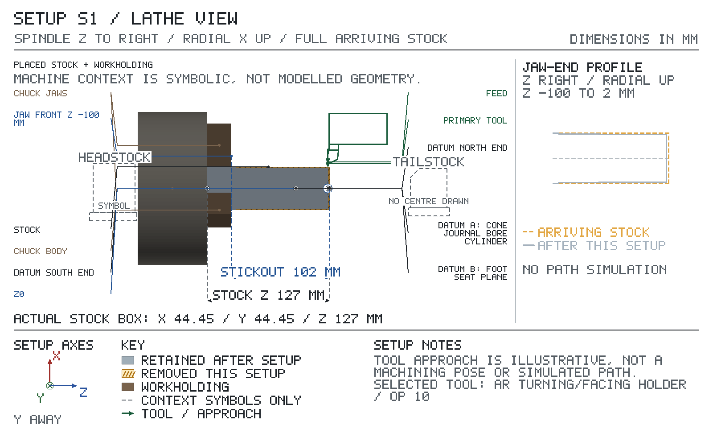
Chuck Ø158.00 in swing over bed Ø279.40: fits.
Work Ø44.45 in swing over cross-slide Ø169.93: fits.
Length needed from the spindle nose 174.00 of 699.77 between centres: fits.
Jaw fronts at Z -100.00; closest planned tool stop 5.00 mm from the jaws.
| feature | drawing Ø limits | turn to Ø | cut from Z | cut to Z |
|---|---|---|---|---|
| head | Ø42.0–43.6 | Ø42.75 | 0.00 | -95.00 |
| body | Ø41.2–42.8 | Ø42.01 | 0.00 | -59.40 |
X reads diameter. Z values are where this setup's cuts on each surface start and end, not the finished extent: a later cut (relief, part-off, next setup) may shorten the surface.
Starts from: the cone blank — Ø19.05, north end at Z 22.01, south end at Z -52.99. cone-sleeve blank sawn nominal 75 long, from the raw north end Z22.0055 to the grip end Z-52.9945. Op 10 faces the north end to Z21.0055, which leaves the cap exactly 74.0 from the grip end whatever the sawn blank measures.
| grip length mm | stickout mm | jaw fronts at Z |
|---|---|---|
| 25.00 | 50.00 | -27.99 |
Coolant: CRC cutting oil brushed on.
| T | tool | insert / size / material | holder / station | ops |
|---|---|---|---|---|
| T1 | AR turning/facing holder | A R Warner, right-hand, TCMT-21.51 insert, nose R0.40, carbide, projection 20.00 from holder face | QCTP holder #1 turning/facing | 10, 20, 30 |
| T3 | 1.6 mm parting blade | right-hand, nose R0.10, 1/16 x 1/2 x 4-1/2 in, max plunge depth 15.00, M2, projection 15.00 from holder face | QCTP holder #7 parting | 40 |
Positive directions: X+ away from the spindle axis; Z+ toward the exposed end, away from the chuck. Axis Set each axis (never Preset), then jog without touching: the display must show 'must read'; 'if reversed' means STOP, fix the axis direction and redo the zero.
Before touching off T1 AR turning/facing holder: set its cutting edge on spindle centre height with the holder's height nut: level with the tailstock dead-centre point, or so a facing cut leaves no pip at the centre.
| axis | touch / pick up | Axis Set | check jog | must read | if reversed |
|---|---|---|---|---|---|
| X | spindle axis; take a light trial cut, withdraw along Z without moving X, stop the spindle, measure the diameter; T1 AR turning/facing holder; from +X side; measure with 0-1 in mic | measured Ø | +X 10.00 | measured Ø + 20.00 | measured Ø − 20.00 |
| Z | raw north end; touch it, then set from the measured M; T1 AR turning/facing holder; from +Z side; direct contact, no paper; measure with caliper; M = before chucking: caliper the sawn blank end to end over its high spots (nominal 75.0); touch T1 on the high spot of the raw north end | M − 52.99 | +Z 10.00 | M − 42.99 | M − 62.99 |
Before touching off T3 1.6 mm parting blade: set its cutting edge on spindle centre height with the holder's height nut: level with the tailstock dead-centre point, or so a facing cut leaves no pip at the centre; then square the blade to the spindle axis: spindle stopped, bring its side flat against the chuck face or a faced shoulder, swing the toolpost until no gap shows, then lock the toolpost.
Before op 40, touch off T3 1.6 mm parting blade: X — take a light trial cut, withdraw along Z without moving X, stop the spindle, measure the diameter (0-1 in mic); Axis Set X measured Ø. Z — chuck-side corner on the cone boss north face: touch it, then set, no paper; Axis Set Z 21.01: Z now reads the chuck-side corner.
| SETUP S2 — sheet 1 (continued): operations | ||||||||
|---|---|---|---|---|---|---|---|---|
| op | do | feature | tool | rpm | feed | Z from → to | direction | inspection: limit, gauge |
| 10 | face, 0.25 mm axial per pass (facing) | cone boss north face | T1 | 1550 | 0.05 mm/rev (78 mm/min) | Z → 21.01 | face from OD to centre | Ra 1.6: roughness comparator |
Face in passes down to the Z21.0055 DRO reading (M - 74 mm off the raw end, 1 mm on a 75.0 blank), then a light finishing pass for the Ra. This cap ends up on the outside of the post. | ||||||||
| 20 | rough turn to Ø17.40, leave 0.20 mm on Ø, 0.40 mm radial per pass | cone spigot (spigot exterior on cone) | T1 | 1650 | 0.08 mm/rev (132 mm/min) | Z 21.01 → -23.00 | toward chuck | — |
| JAWS Z -27.99: 4.99 clear — disengage the feed early, hand feed to the end | ||||||||
| 30 | finish turn, 0.10 mm radial per pass | cone spigot (spigot exterior on cone) | T1 | 1950 | 0.045 mm/rev (88 mm/min) | Z 21.01 → -23.00 | toward chuck | Ø 17.194–17.206: 0-1 in mic |
| JAWS Z -27.99: 4.99 clear — disengage the feed early, hand feed to the end Finish to the bonding size. Mic both ends and the middle. | ||||||||
| 40 | part off | cone boss south face | T3 | 350 | 0.025 mm/rev (9 mm/min) | Z → -22.65 (chuck-side corner) X 19.05 → 0.00 (9.53 radial) | face from OD to centre | — |
| JAWS Z -27.99: 5.33 clear — disengage the feed early, hand feed to the end Before parting, lay a folded rag in the chip tray under the cut. Let the sleeve drop onto the rag, stop the spindle, then pick it up. Never reach under turning work. | ||||||||
| 50 | inspect | cone boss north face | — | — | — | — | — | length 41.50–42.52: caliper PROCESS HOLD — not a drawing limit (why: see job page): cone boss north face length 42.040–42.080: 1-2 in mic |
Stone the parting burr without shortening the sleeve, then measure cap to cap. | ||||||||
Sign off: __________ First article / measured results: ____________________
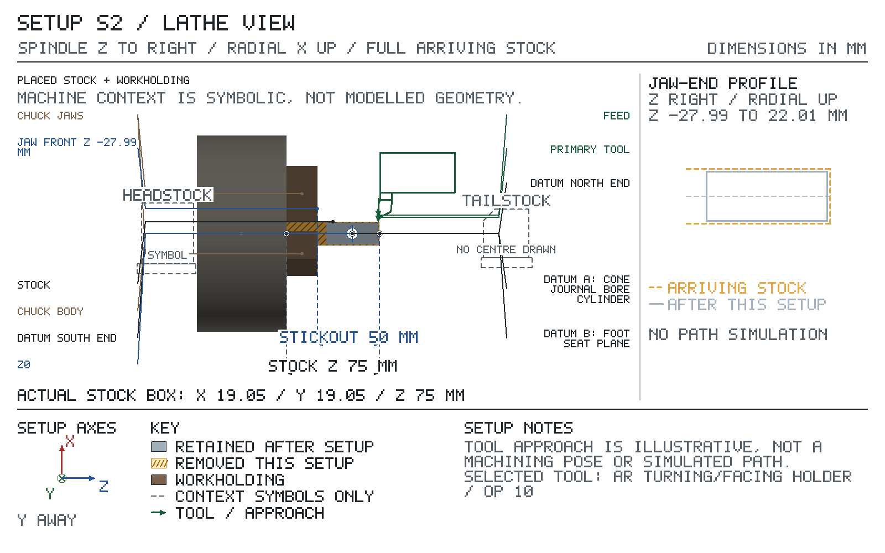
Chuck Ø158.00 in swing over bed Ø279.40: fits.
Work Ø19.05 in swing over cross-slide Ø169.93: fits.
Length needed from the spindle nose 122.00 of 699.77 between centres: fits.
Jaw fronts at Z -27.99; closest planned tool stop 4.99 mm from the jaws.
| feature | drawing Ø limits | turn to Ø | cut from Z | cut to Z |
|---|---|---|---|---|
| cone spigot | — | Ø17.20 | 21.01 | -23.00 |
X reads diameter. Z values are where this setup's cuts on each surface start and end, not the finished extent: a later cut (relief, part-off, next setup) may shorten the surface. A dash in the drawing column: a process size the drawing does not give.
Starts from: the crank blank — Ø25.00, north end at Z 1.00, south end at Z -104.00. crank-sleeve blank sawn nominal 105 long, from the raw north end Z1.0 to the grip end Z-104. Op 10 faces the north end to Z0, which leaves the north face exactly 104.0 from the grip end whatever the sawn blank measures.
| grip length mm | stickout mm | jaw fronts at Z |
|---|---|---|
| 25.00 | 80.00 | -79.00 |
Coolant: CRC cutting oil brushed on.
| T | tool | insert / size / material | holder / station | ops |
|---|---|---|---|---|
| T1 | AR turning/facing holder | A R Warner, right-hand, TCMT-21.51 insert, nose R0.40, carbide, projection 20.00 from holder face | QCTP holder #1 turning/facing | 10, 20, 30 |
| T3 | 1.6 mm parting blade | right-hand, nose R0.10, 1/16 x 1/2 x 4-1/2 in, max plunge depth 15.00, M2, projection 15.00 from holder face | QCTP holder #7 parting | 40 |
Positive directions: X+ away from the spindle axis; Z+ toward the exposed end, away from the chuck. Axis Set each axis (never Preset), then jog without touching: the display must show 'must read'; 'if reversed' means STOP, fix the axis direction and redo the zero.
Before touching off T1 AR turning/facing holder: set its cutting edge on spindle centre height with the holder's height nut: level with the tailstock dead-centre point, or so a facing cut leaves no pip at the centre.
| axis | touch / pick up | Axis Set | check jog | must read | if reversed |
|---|---|---|---|---|---|
| X | spindle axis; take a light trial cut, withdraw along Z without moving X, stop the spindle, measure the diameter; T1 AR turning/facing holder; from +X side; measure with 0-1 in mic | measured Ø | +X 10.00 | measured Ø + 20.00 | measured Ø − 20.00 |
| Z | raw north end; touch it, then set from the measured M; T1 AR turning/facing holder; from +Z side; direct contact, no paper; measure with caliper; M = before chucking: caliper the sawn blank end to end over its high spots (nominal 105.0); touch T1 on the high spot of the raw north end | M − 104.00 | +Z 10.00 | M − 94.00 | M − 114.00 |
Before touching off T3 1.6 mm parting blade: set its cutting edge on spindle centre height with the holder's height nut: level with the tailstock dead-centre point, or so a facing cut leaves no pip at the centre; then square the blade to the spindle axis: spindle stopped, bring its side flat against the chuck face or a faced shoulder, swing the toolpost until no gap shows, then lock the toolpost.
Before op 40, touch off T3 1.6 mm parting blade: X — take a light trial cut, withdraw along Z without moving X, stop the spindle, measure the diameter (0-1 in mic); Axis Set X measured Ø. Z — chuck-side corner on the crank boss faces: touch it, then set, no paper; Axis Set Z 0.00: Z now reads the chuck-side corner.
| SETUP S3 — sheet 1 (continued): operations | ||||||||
|---|---|---|---|---|---|---|---|---|
| op | do | feature | tool | rpm | feed | Z from → to | direction | inspection: limit, gauge |
| 10 | face, 0.25 mm axial per pass (facing) | crank boss faces | T1 | 1150 | 0.05 mm/rev (58 mm/min) | Z → 0.00 | face from OD to centre | — |
Face in passes down to the Z0 DRO reading (M - 104 mm off the raw end, 1 mm on a 105.0 blank). | ||||||||
| 20 | rough turn to Ø22.13, leave 0.20 mm on Ø, 0.25 mm radial per pass | crank spigot (spigot exterior on crank) | T1 | 1300 | 0.05 mm/rev (65 mm/min) | Z 0.00 → -73.00 | toward chuck | — |
| JAWS Z -79.00: 6.00 clear — disengage the feed early, hand feed to the end | ||||||||
| 30 | finish turn, 0.10 mm radial per pass | crank spigot (spigot exterior on crank) | T1 | 1550 | 0.045 mm/rev (70 mm/min) | Z 0.00 → -73.00 | toward chuck | Ø 21.924–21.936: 0-1 in mic |
| JAWS Z -79.00: 6.00 clear — disengage the feed early, hand feed to the end Finish to the bonding size. Mic both ends and the middle. | ||||||||
| 40 | part off | crank boss faces | T3 | 250 | 0.025 mm/rev (6 mm/min) | Z → -73.63 (chuck-side corner) X 25.00 → 0.00 (12.50 radial) | face from OD to centre | length 71.2–72.8: caliper |
| JAWS Z -79.00: 5.36 clear — disengage the feed early, hand feed to the end Before parting, lay a folded rag in the chip tray under the cut. Let the sleeve drop onto the rag, stop the spindle, then pick it up. Never reach under turning work. | ||||||||
| 50 | inspect | crank boss faces | — | — | — | — | — | length 71.2–72.8: 2-3 in mic PROCESS HOLD — not a drawing limit (why: see job page): crank boss faces length 72.000–72.080: 2-3 in mic |
Stone the parting burr without shortening the sleeve, then measure end to end. Its station from the post axis is checked after bonding. | ||||||||
Sign off: __________ First article / measured results: ____________________
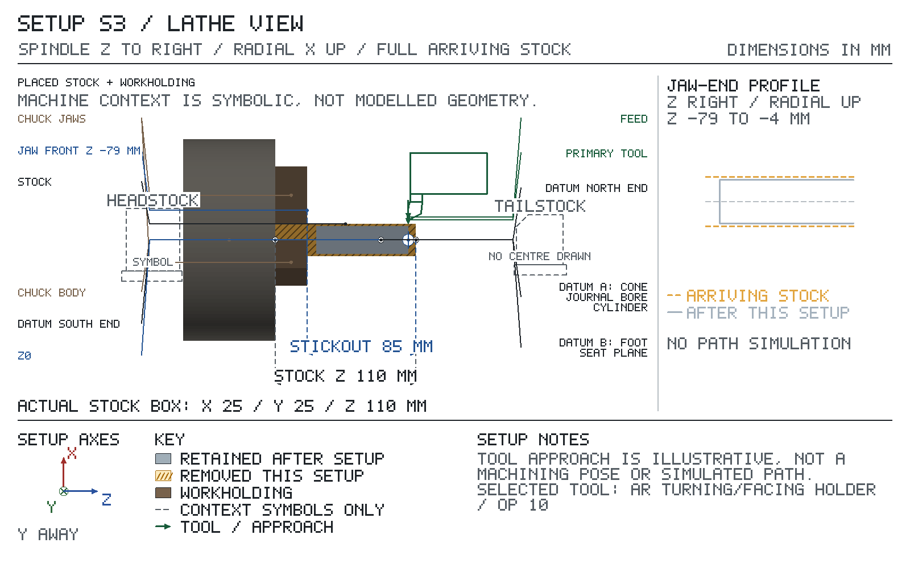
Chuck Ø158.00 in swing over bed Ø279.40: fits.
Work Ø25.00 in swing over cross-slide Ø169.93: fits.
Length needed from the spindle nose 152.00 of 699.77 between centres: fits.
Jaw fronts at Z -79.00; closest planned tool stop 5.36 mm from the jaws.
| feature | drawing Ø limits | turn to Ø | cut from Z | cut to Z |
|---|---|---|---|---|
| crank spigot | — | Ø21.93 | 0.00 | -73.00 |
X reads diameter. Z values are where this setup's cuts on each surface start and end, not the finished extent: a later cut (relief, part-off, next setup) may shorten the surface. A dash in the drawing column: a process size the drawing does not give.
Starts from: part as it arrives from Setup S1 — top at Z 22.225, bottom at Z -22.225. turned post horizontal in the dividing head; the raw tail is the highest point. The socket enters at the top of the head. Z0 is on the post axis (set on the body crest); break-through depths are set for the largest head the drawing allows (Ø43.6), so the exit Zs in the operations sit below the feature map's nominal head face.
| grip length mm | stickout mm |
|---|---|
| 20.000 | 105.000 |
Index: BS-0: index pin in the zero hole. Lock the spindle before cutting.
Coolant: CRC cutting oil brushed on.
Break edges 0.100 mm max in this setup, not the drawing's 0.25: small socket edge break keeps the bonded length.
| T | tool | insert / size / material | holder / station | ops |
|---|---|---|---|---|
| T1 | #2 CD | right-hand, Ø1.980, shank Ø4.762, flute 1.900, 2 flutes, M42, projection 27.000 from holder face | drill chuck | 10 |
| T2 | 7/16 in drill | Ø11.113, flute 84.100, 2 flutes, HSS, projection 119.000 from holder face | drill chuck | 20 |
| T3 | 21.8 mm drill | Ø21.800, shank Ø12.700, flute 75.000, 2 flutes, HSS, projection 95.000 from holder face | drill chuck | 30 |
| T4 | 22.01 mm reamer | Ø22.010, shank Ø12.700, flute 60.000, 6 flutes, HSS, projection 85.000 from holder face | drill chuck | 40 |
Positive directions: X+ tool moves right relative to the work (table moves left); Y+ tool moves away from you relative to the work (table moves toward you); Z+ tool moves up. Axis Set each axis (never Preset), then make the check jog: the display must show 'must read'; 'if reversed' means STOP, fix the axis direction and redo the zero.
Before zeroing: align the work on the head, body, foot seat with the dial test indicator: run the indicator along the length of each surface by table travel; while it reads more than 0.02 mm total indicator reading, loosen the clamping, tap the high end of the work toward the low reading, re-clamp and sweep again.
| axis | touch / pick up | Axis Set | check jog | must read | if reversed |
|---|---|---|---|---|---|
| X | foot seat; 0.2 in edge finder; from +X side; surface at 0.000; edge-finder radius 2.540; speed, kick-out and offset: EDGE FINDER box | 2.540 | +X 10.000 | 12.540 | -7.460 |
| Y | head; indicate: DTI in the spindle; sweep across the head in Y and move the table until the highest reading (the crest) is under the spindle; then Axis Set Y | 0.000 | +Y 10.000 | 10.000 | -10.000 |
| Z | body; touch it, then set; T1 #2 CD; from +Z side; surface at 21.010; direct contact, no paper | 21.010 | +Z 10.000 | 31.010 | 11.010 |
X and Y check jog, after each Axis Set:
Speed: 750–1500 rpm, in the spindle range that covers it (finder 750–1500 rpm; mill 50–3000 rpm).
Kick-out: spindle stopped, push the tip a little off centre by hand. Run the spindle: the tip wobbles. Feed toward the edge by handwheel, in the smallest steps once close: the tip touches and runs true with the body, and at the next small step it kicks sharply sideways. Stop at the kick. Back off, re-approach in the smallest steps and stop at the first kick again: that position is the pick-up.
Offset: at the pick-up the spindle axis is half the tip Ø (5.080) off the edge, r = 2.540. Coming from the − side (moving + onto the edge): Axis Set edge − 2.540. Coming from the + side: Axis Set edge + 2.540. Each DRO ZERO row prints its signed Axis Set.
Finder data: Starrett 827A: mechanical edge finder, .200 in contact Ø, .375 in body, single end (starrett.com Edge & Center Finders listing); 750-1500 rpm for a .200 in mechanical edge finder; tip centres then breaks away at the edge (Travers Tool Co., How to Use a .200 in Edge Finder, solutions.travers.com, 2025).
Before op 20, install T2 7/16 in drill, then re-touch it: Z — on the body (Z 21.010): touch it, then set, no paper; Axis Set Z 21.010.
Before op 30, install T3 21.8 mm drill, then re-touch it: Z — on the body (Z 21.010): touch it, then set, no paper; Axis Set Z 21.010.
Before op 40, install T4 22.01 mm reamer, then re-touch it: Z — on the body (Z 21.010): touch it, then set, no paper; Axis Set Z 21.010.
| SETUP S4 — sheet 1 (continued): operations | ||||||||
|---|---|---|---|---|---|---|---|---|
| op | do | feature | tool | rpm | feed | Z tip | direction | inspection: limit, gauge |
| 10 | spot | crank socket (through-socket bore on body) | T1 | 3000 | 120 mm/min | tool axis X -72.700, Y 0.000 Z 21.380 → 19.380 depth 2.000 | — | — |
| 20 | drill | crank socket (through-socket bore on body) | T2 | 550 | 61 mm/min | tool axis X -72.700, Y 0.000 Z 21.380 → -25.635 breaks through at -21.800 | — | — |
Pilot through the head, pecking every 6 mm to clear chips. Break through: the full diameter runs at least 0.496 past the exit face. | ||||||||
| 30 | drill | crank socket (through-socket bore on body) | T3 | 300 | 54 mm/min | tool axis X -72.700, Y 0.000 Z 21.380 → -28.845 breaks through at -21.800 | — | — |
Open the pilot; this leaves 0.21 mm on diameter for the reamer. Break through: the full diameter runs at least 0.495 past the exit face. | ||||||||
| 40 | ream | crank socket (through-socket bore on body) | T4 | 200 | 50 mm/min | tool axis X -72.700, Y 0.000 Z 21.380 → -23.800 breaks through at -21.800 | — | Ø 22.000–22.020: bore gauge |
Run the full-diameter lands out of the far side, then withdraw without reversing. Gauge both mouths and the middle. Break through: the full diameter runs at least 0.500 past the exit face. | ||||||||
Sign off: __________ First article / measured results: ____________________
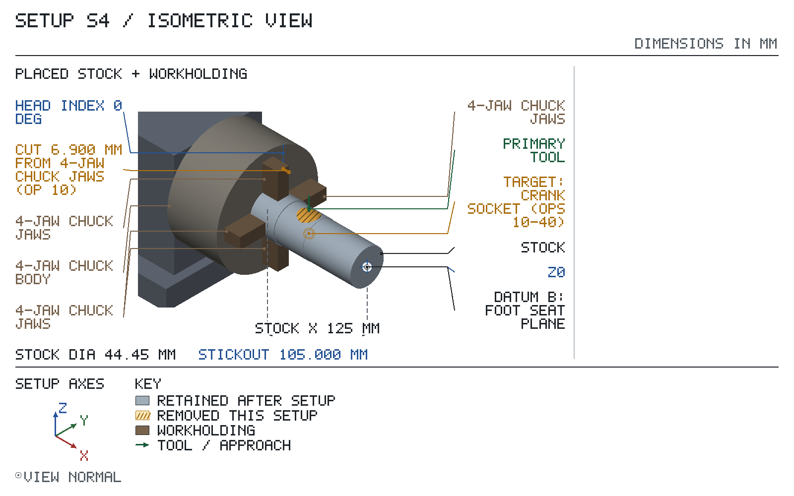
Spindle-to-table over the dividing head: needs 361.237 of 431.800: fits.
X travel: needs 160.000 of 584.200: fits.
Y travel: needs 150.000 of 222.250: fits.
| op | tool | closest obstacle | clearance mm | action |
|---|---|---|---|---|
| 10 | T1 | chuck jaw 1 beside the cut | 6.900 | |
| 20 | T2 | tool body to stock 22.3 from the tool axis | 16.744 | |
| 30 | T3 | tool body to stock 22.3 from the tool axis | 11.400 | |
| 40 | T4 | tool body to stock 22.3 from the tool axis | 11.295 |
| feature | reference point | X | Y | Z |
|---|---|---|---|---|
| crank socket | hole axis | -72.700 | 0.000 | -21.375 |
The op table gives the tool targets.
Starts from: part as it arrives from Setup S4 — top at Z 22.225, bottom at Z -22.225. the post turned 12.5182 degrees on the index; the cross-bore enters at the top of the body. Break-through depths are set for the thickest body the S1 op 50 hold allows (42.03), so the exit Zs in the operations sit below the feature map's nominal body face.
| grip length mm | stickout mm |
|---|---|
| 20.000 | 105.000 |
Index: BS-0: plate B, 23-hole circle: 1 crank turn + 9 hole spaces (count spaces, not holes), turning the work counterclockwise viewed from the free end of the work (from setup +X, looking at the chuck). This setting turns the work 12.5217°, 0.0035° off the planned 12.5182° (allowed ±0.0795°). Take up the worm backlash: always crank so the work turns that same way; if the pin overshoots the hole, back off past it and come again the same way. Lock the spindle before cutting.
Coolant: CRC cutting oil brushed on.
Break edges 0.100 mm max in this setup, not the drawing's 0.25: small socket edge break keeps the bonded length.
| T | tool | insert / size / material | holder / station | ops |
|---|---|---|---|---|
| T1 | #2 CD | right-hand, Ø1.980, shank Ø4.762, flute 1.900, 2 flutes, M42, projection 27.000 from holder face | drill chuck | 10 |
| T2 | 7/16 in drill | Ø11.113, flute 84.100, 2 flutes, HSS, projection 119.000 from holder face | drill chuck | 20 |
| T3 | 17.05 mm drill | Ø17.050, shank Ø12.700, flute 75.000, 2 flutes, HSS, projection 95.000 from holder face | drill chuck | 30 |
| T4 | 17.26 mm reamer | Ø17.260, shank Ø12.700, flute 60.000, 6 flutes, HSS, projection 85.000 from holder face | drill chuck | 40 |
Positive directions: X+ tool moves right relative to the work (table moves left); Y+ tool moves away from you relative to the work (table moves toward you); Z+ tool moves up. Axis Set each axis (never Preset), then make the check jog: the display must show 'must read'; 'if reversed' means STOP, fix the axis direction and redo the zero.
Before zeroing: check the work on the head, foot seat with the dial test indicator: run the indicator along the length of each surface by table travel; it must read 0.02 mm total indicator reading or less. Do not loosen the work to correct it; if it reads more: 1) Unlock the spindle, index back to the zero hole (the S4 position) and lock it. 2) With the DTI in the spindle, run the tip down the reamed Ø22.01 crank-socket wall by quill feed, once on the -Y side and once on the +Y side. 3) Each reading holds within one dial division (0.0005 in) over the socket depth: the post has not turned, the head has moved. Re-align the head as in S4 (tap the head body on the table, never the work, until the top and side sweeps of the body along X each read within 0.01 mm, then tighten the head bolts), re-index to the plate setting and sweep again. The zeros stand. 4) A reading moves more than one division: the post has turned in the jaws. This is the only case that moves the work: ease one jaw, turn the post until both socket-wall readings hold one division, re-tighten each jaw a little at a time while indicating the head and body to 0.02 mm, re-index, then set the Y, X and Z zeros again from the start of this table.
| axis | touch / pick up | Axis Set | check jog | must read | if reversed |
|---|---|---|---|---|---|
| X | foot seat; 0.2 in edge finder; from +X side; surface at 0.000; edge-finder radius 2.540; speed, kick-out and offset: EDGE FINDER box, Setup S4 sheet 1 | 2.540 | +X 10.000 | 12.540 | -7.460 |
| Y | body; indicate: DTI in the spindle; sweep across the body in Y and move the table until the highest reading (the crest) is under the spindle; then Axis Set Y | 0.000 | +Y 10.000 | 10.000 | -10.000 |
| Z | body; touch it, then set; T1 #2 CD; from +Z side; surface at 21.010; direct contact, no paper | 21.010 | +Z 10.000 | 31.010 | 11.010 |
X and Y check jog, after each Axis Set:
Before op 20, install T2 7/16 in drill, then re-touch it: Z — on the body (Z 21.010): touch it, then set, no paper; Axis Set Z 21.010.
Before op 30, install T3 17.05 mm drill, then re-touch it: Z — on the body (Z 21.010): touch it, then set, no paper; Axis Set Z 21.010.
Before op 40, install T4 17.26 mm reamer, then re-touch it: Z — on the body (Z 21.010): touch it, then set, no paper; Axis Set Z 21.010.
| SETUP S5 — sheet 1 (continued): operations | ||||||||
|---|---|---|---|---|---|---|---|---|
| op | do | feature | tool | rpm | feed | Z tip | direction | inspection: limit, gauge |
| 10 | spot | cone socket (through-socket bore on body) | T1 | 3000 | 120 mm/min | tool axis X -33.370, Y 0.000 Z 21.010 → 19.010 depth 2.000 | — | — |
| 20 | drill | cone socket (through-socket bore on body) | T2 | 550 | 61 mm/min | tool axis X -33.370, Y 0.000 Z 21.010 → -24.855 breaks through at -21.020 | — | — |
Pilot through the body, pecking every 6 mm to clear chips. Break through: the full diameter runs at least 0.491 past the exit face. | ||||||||
| 30 | drill | cone socket (through-socket bore on body) | T3 | 350 | 63 mm/min | tool axis X -33.370, Y 0.000 Z 21.010 → -26.640 breaks through at -21.020 | — | — |
Open the pilot; this leaves 0.21 mm on diameter for the reamer. Break through: the full diameter runs at least 0.493 past the exit face. | ||||||||
| 40 | ream | cone socket (through-socket bore on body) | T4 | 250 | 63 mm/min | tool axis X -33.370, Y 0.000 Z 21.010 → -23.020 breaks through at -21.020 | — | Ø 17.250–17.270: bore gauge |
Run the full-diameter lands out of the far side, then withdraw without reversing. Gauge both mouths and the middle. Break through: the full diameter runs at least 0.495 past the exit face. | ||||||||
Sign off: __________ First article / measured results: ____________________
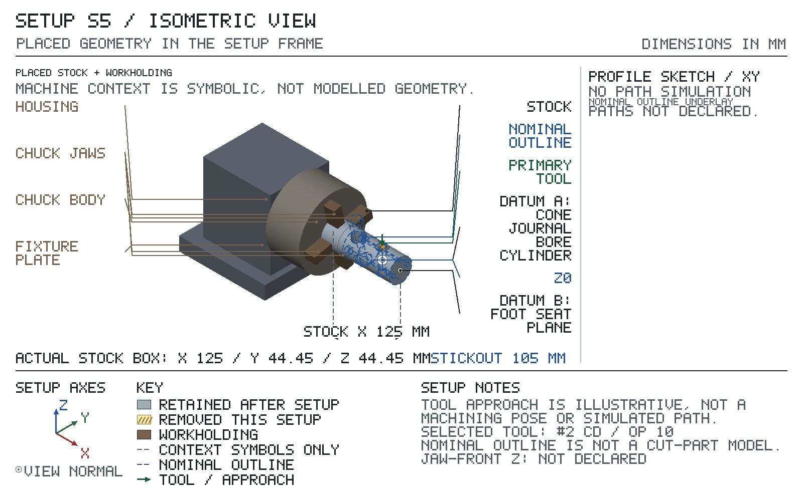
Spindle-to-table over the dividing head: needs 361.237 of 431.800: fits.
X travel: needs 160.000 of 584.200: fits.
Y travel: needs 150.000 of 222.250: fits.
| op | tool | closest obstacle | clearance mm | action |
|---|---|---|---|---|
| 10 | T1 | holder face to stock under the holder at Z 21.005 | 25.000 | |
| 20 | T2 | chuck jaw 1 beside the cut | 61.395 | |
| 30 | T3 | holder face to the stock top beside the tool (Z 21.005) | 47.355 | |
| 40 | T4 | holder face to stock under the holder at Z 21.005 | 42.989 |
| feature | reference point | X | Y | Z |
|---|---|---|---|---|
| cone socket | hole axis | -33.370 | 0.000 | -21.005 |
The op table gives the tool targets.
Starts from: parts from Setup S5 and Setup S2 joined — top at Z 22.42, bottom at Z -22.37. Joined by retaining compound (Loctite 638 retaining compound, applied in op 20): spigot cone spigot into through-socket cone socket, clearance 0.044 to 0.076 mm diametral. post horizontal on the cradle, crank socket axis vertical; the cone-sleeve cap rims are the highest and lowest points.
Bought finished: one 2 in R8 boring head with a 7/16-20 drawbar thread, 0.001 in dial, 0.625 in offset travel, and one 1/2 in shank carbide-tipped boring bar reaching 38 mm.
Check on receipt, before first use; return the item if any check fails.
| check | gauge | accept |
|---|---|---|
| R8 shank fit | by hand / eye; shank into the PM-30MV spindle, drawbar pulled tight | the shank keyway takes the spindle key and the head seats with no rock |
| dial graduation | DTI; DTI tip on the slide end, dial advanced 10 graduations (0.010 in = 0.254 mm), three times | 0.244–0.264 mm (0.0097–0.0103 in) |
| slide gib and lock | by hand / eye; slide locked, bar end pushed by hand | no movement felt at the bar tip |
| SETUP S6 — sheet 1 (continued): assembly / finishing | ||||
|---|---|---|---|---|
| step | feature | material / consumable | action | inspection: limit, gauge |
| 10 | cone boss | — | Degrease the cross-bore and the sleeve outside with a residue-free solvent cleaner and let them dry; keep oil and cutting fluid off both. Bore-gauge the cross-bore at both mouths with the 10-18 mm bore gauge and mic the sleeve at both ends: bore minus sleeve must read 0.044-0.076. Stop if it does not. | — |
| 20 | cone boss | — | With both op 10 readings in band, run a continuous bead of compound round the leading end of the sleeve and wet the bore. Push the sleeve in with a turning motion until the north cap sits on both cone pins; a 0.05 mm feeler must not enter under the cap at either pin. The two pins, 14.8 apart across the post axis, set the sleeve depth and the post's roll together: with the cap on both, the crank socket is vertical. Check it at once, before the compound grabs: height gauge the head top at the -X and +X edges of the crank-socket mouth (DTI on the height gauge, highest reading on each side); the two readings agree within 0.05 (0.13° of roll). If not, roll the post until the cap sits on both pins. Wipe the excess off both mouths, then leave the post undisturbed for the 24 h cure. Surface prep: solvent-degreased and dry, op 10. Do not disturb until cured: cure time 1440 min. | Ø 16.4–18.0: 0-1 in mic |
| 30 | cone boss north face | — | After the cure, caliper the sleeve cap to cap. | length 41.50–42.52: caliper |
Sign off: __________ First article / measured results: ____________________
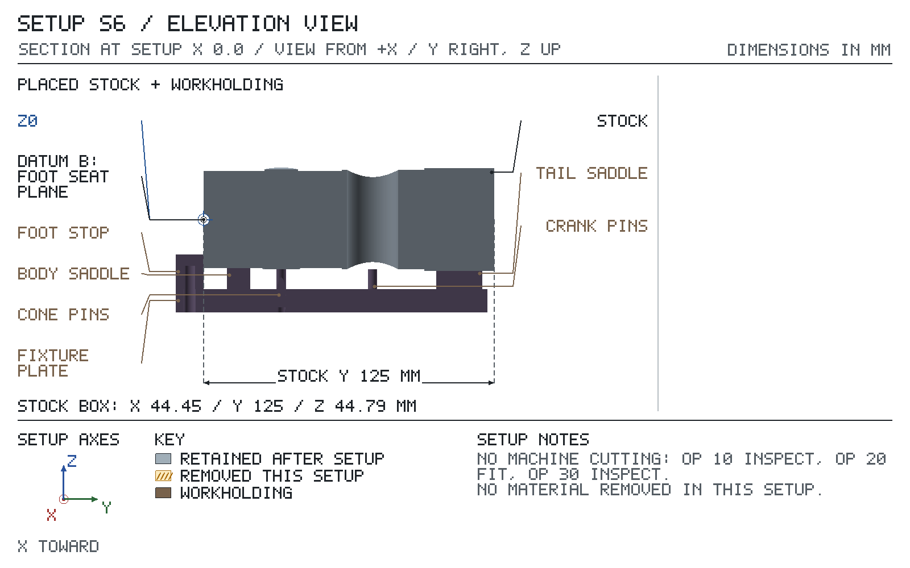
Make before Setup S6. Positions are in the Setup S6 frame: boxes give their X / Y / Z extents, cylinders their axis.
| Component | Size mm | Position, Setup S6 X / Y / Z mm | Locates | Fastener |
|---|---|---|---|---|
| base, 1018 steel † | 80 × 134 × 10 | X -40…40, Y -12…122, Z -40…-30 with 5 × #10 close-fit clearance #9 (0.196 in) with 3/8 in × 5.5 deep counterbore from below (MH 27th Table 4 p.1934, Table 5 p.1621): axis at X -25, Y 15; Z -40.5…-29.5; axis at X 25, Y 15; Z -40.5…-29.5; axis at X -25, Y 110; Z -40.5…-29.5; axis at X 25, Y 110; Z -40.5…-29.5; axis at X 0, Y -6; Z -40.5…-29.5 with 6 × Ø4 dowel hole, reamed through the base and 7 deep into the part above: axis at X -17, Y 15; Z -40.5…-23; axis at X 17, Y 15; Z -40.5…-23; axis at X -17, Y 110; Z -40.5…-23; axis at X 17, Y 110; Z -40.5…-23; axis at X -10, Y -6; Z -40.5…-23; axis at X 10, Y -6; Z -40.5…-23 with 2 × Ø4 reamed through for a crank pin: axis at X -6, Y 72.7; Z -40.5…-29.5; axis at X 6, Y 72.7; Z -40.5…-29.5 with 2 × Ø4 reamed through, tilted 12.52° square to the cone cap, for a cone pin; axis enters the base top 0.5 below the row start: axis from (1, 33.37, -29.5) to (-1.4, 33.37, -40.5), 12.52° off −Z; axis from (-14.1, 33.37, -29.5) to (-16.6, 33.37, -40.5), 12.52° off −Z | — | — |
| body saddle, 1018 steel † | 60 × 10 × 15 | X -30…30, Y 10…20, Z -30…-15 with 1 × Ø42.01 hole: axis at X 0, Z 0; Y 9…21 with 2 × #10-24 UNC-2B tapped 10 deep, #25 (0.1495 in) tap drill 12 deep (MH 27th Table 4 p.1934): axis at X -25, Y 15; Z -30.5…-20; axis at X 25, Y 15; Z -30.5…-20 with 2 × Ø4 dowel hole, reamed through the base and 7 deep into the part above: axis at X -17, Y 15; Z -40.5…-23; axis at X 17, Y 15; Z -40.5…-23 | body Ø42 | 2 × #10-24 × 1/2 in SHCS from below + 2 × Ø4 × 16 dowels |
| tail saddle, 1018 steel † | 60 × 20 × 15 | X -30…30, Y 100…120, Z -30…-15 with 1 × Ø44.45 hole: axis at X 0, Z 0; Y 99…121 with 2 × #10-24 UNC-2B tapped 10 deep, #25 (0.1495 in) tap drill 12 deep (MH 27th Table 4 p.1934): axis at X -25, Y 110; Z -30.5…-20; axis at X 25, Y 110; Z -30.5…-20 with 2 × Ø4 dowel hole, reamed through the base and 7 deep into the part above: axis at X -17, Y 110; Z -40.5…-23; axis at X 17, Y 110; Z -40.5…-23 | raw tail | 2 × #10-24 × 1/2 in SHCS from below + 2 × Ø4 × 16 dowels |
| foot stop, 1018 steel † | 30 × 12 × 15 | X -15…15, Y -12…0, Z -30…-15 with 1 × #10-24 UNC-2B tapped 10 deep, #25 (0.1495 in) tap drill 12 deep (MH 27th Table 4 p.1934): axis at X 0, Y -6; Z -30.5…-20 with 2 × Ø4 dowel hole, reamed through the base and 7 deep into the part above: axis at X -10, Y -6; Z -40.5…-23; axis at X 10, Y -6; Z -40.5…-23 | foot B end | 1 × #10-24 × 1/2 in SHCS from below + 2 × Ø4 × 16 dowels |
| cone pin, +X side, hardened Ø4 m6 x 16 dowel † | Ø4 × 16 | axis from (2.67, 33.37, -22.11) to (-0.795, 33.37, -37.73), 12.52° off −Z | cone sleeve north cap annulus, 7.4 from the cap centre | press fit; top 21.01 ±0.06 from the post axis along the pin axis (high edge of the flat 21.76 below the axis), read over the seated gauge arbor |
| cone pin, -X side, hardened Ø4 m6 x 20 dowel † | Ø4 × 20 | axis from (-11.775, 33.37, -18.9) to (-16.11, 33.37, -38.425), 12.52° off −Z | cone sleeve north cap annulus, 7.4 from the cap centre | press fit; top 21.01 ±0.06 from the post axis along the pin axis (high edge of the flat 18.56 below the axis), read over the seated gauge arbor |
| crank pins, hardened Ø4 m6 dowel † | Ø4 × 16 | 1: axis at X -6, Y 72.7; Z -37.375…-21.375 2: axis at X 6, Y 72.7; Z -37.375…-21.375 | crank sleeve north face | press fit; top 21.38 ±0.12 below the post axis, read over the seated gauge arbor |
Make: base, 1018 steel: 1018 flat 1/2 x 3-1/2 in (stock), sawn 138 long, six faces milled in the PM 6 vise to 80 x 134 x 10, faces parallel within 0.02 (height gauge on the surface plate); from below drill the five #10 close-fit clearances #9 (0.196 in) through at 1500 rpm and counterbore them 3/8 in x 5.5 deep with the 3/8 in end mill at 900 rpm, plunged by the quill (drill-index-115, endmills-lms-6784; #10 close fit #9 MH 27th Table 4 p.1934, #10 counterbore 3/8 in MH 27th Table 5 p.1621; speeds for 1018 at 125-175 HB, HSS drilling 90 fpm MH 27th Table 17 p.1061 -> 1750 rpm for the #9, HSS end milling 110 fpm MH 27th Table 11 p.1045 -> 1120 rpm for 3/8 in). With the saddles and the foot stop screwed on snug: drill 3.8 and ream 4.00 each dowel pair through the base and 7 into the part above (cone-fixture-reamers; MH 27th p.833 reaming allowance), press the Ø4 x 16 dowels in flush with the underside, then tighten the screws. Crank-pin holes: drill 3.8 and ream 4.00 through, square to the base. Cone-pin holes: base X along the table X, tilt the head 12.52° on its scale (±0.5°) so the hole leans toward -X going down, spot each entry with a 3/16 in end mill, then drill 3.8 and ream 4.00 through; each axis runs through X 1.028 and X -14.133 at Y 33.368, Z -29.512 (the hole rows' start, 0.5 above the base top), entering the base top at X 0.919 and X -14.241. The dowel's flat end is ground square to its axis, so a head-tilt error tips both pin tops alike: the cap then bears on the same-side edge of each Ø3.2 flat, at most 1.6 from its centre, which moves the sleeve at most 1.6 x tan 0.5° = 0.014 along its axis and leaves the roll set by the two pins unchanged. Press each pin to its Fastener-column distance from the post axis, read over the gauge arbor (42.01 mm cone bond-cradle gauge arbor (stepped, shop-made)) bedded in both seats against the foot stop: cradle on the surface plate, DTI on the height gauge zeroed on the crown of the arbor's body section, the post axis half its miked diameter below that zero; the tail section's crown must read half the difference of the two miked diameters higher within 0.01, or the seats are not on one axis. Read each pin top through the arbor's relief, highest reading over the top. Crank pins: 21.38 ±0.12 below the axis. Cone pins: 21.01 ±0.06 along each pin's own axis from the post axis (from the plane through the post axis square to the pins, the north-cap plane's offset), read as the high (-X) edge of each Ø3.2 flat 21.76 (+X pin) and 18.56 (-X pin) below the axis, ±0.06; the two cone readings' errors agree within 0.03, 0.12° of roll over the 14.8 spacing (the S6 op 20 mouth check allows 0.13°). each band is 25 % of the post band the pin sets, rounded down to the hundredth (crank sleeve north face, the post's two-place 0.51: 0.12; north cap, half of it as the cap sits ConeBossLen/2 off the post centre, 0.255: 0.06), leaving 75 % to the sleeve and the bond, because the shares must sum to the band they replace (MH 27th p.987, Transfer of Tolerances; harmonic-analyzer MHA-DT-005-TL-01); and the tops print from the post axis, not the base top, because a pin top sets a sleeve face against that axis and a chain through the seat height would spend the band twice. Accept the cradle on these readings and then a dry fit before its first bond: blue the north cap of an S2 sleeve, lay the S5 post in the saddles against the foot stop, push the dry sleeve through the cross-bore until the cap stops, and lift the post off: both pin tops must show blue. Re-seat it: the -X and +X edges of the crank-socket mouth, read with the DTI on the height gauge, agree within 0.05, and the south cap, read with the DTI swept along the post axis off the body top, stands proud by the miked sleeve length less the miked body diameter at the socket, within 0.02, which puts the north cap flush on the body. If not, draw or press the pins to correct their heights and repeat; body saddle, 1018 steel, tail saddle, 1018 steel, foot stop, 1018 steel: 1018 flat 3/4 x 2-1/2 in (stock), sawn and six faces milled to size; drill #25 (0.1495 in) x 12 deep at 2000 rpm and tap #10-24 UNC-2B x 10 deep by hand at the tabled screw positions (drill-index-115; taps-unc-hand/10-24-plug, finished with taps-unc-hand/10-24-bottoming in the T-wrench tap-wrench-t-1-16-1-4; #10-24 tap drill MH 27th Table 4 p.1934; 1018 at 125-175 HB, HSS drilling 90 fpm MH 27th Table 17 p.1061 -> 2300 rpm for the #25; the tap is started square from the drill chuck with the spindle off and turned by hand, so no tapping speed applies). After doweling (base), the base clamped flat on the table with its long edge trammed along table X: tilt the head 90° and, with the boring head (2 in R8 boring head (job purchase)), bore both seats on one axis 30.00 above the base top (picked up on the base top), each to suit its mate on the S5 post, the body seat to the body (nominal Ø42.01) and the tail seat to the raw tail (nominal Ø44.45): bore, lay the post in with its body and tail blued, and open the seat until the blue marks its whole arc and the post does not rock across it; the bar entering each seat from the nearer base end (over the foot stop for the body seat) so the head body stays clear of the parts; then, head back at 0° and the cradle turned 90° with the long edge trammed along table Y, side-mill the foot stop's foot-B face square to the long edge with a 3/4 in end mill (endmills-lms-6784); cone pin, +X side, hardened Ø4 m6 x 16 dowel: bought ISO 8734 hardened dowel, Ø4 m6 (4.004-4.012) x 16, flat end up (ground square, Ø3.2 flat inside the end chamfer), from the cone fixture hardware; pressed from the top in the PM 6 vise with a soft-faced pusher into the 4.00 reamed hole (3.998-4.003, 0.001-0.014 interference) to its distance from the post axis in the Fastener column, read over the gauge arbor bedded in both seats as the base row says. hole under the pin as MH 27th Table 1 note c (p.1670) sets for a press fit, because the pins must not move when the sleeves are pushed onto them; the vise because the shop has no arbor press; cone pin, -X side, hardened Ø4 m6 x 20 dowel: bought ISO 8734 hardened dowel, Ø4 m6 (4.004-4.012) x 20, flat end up (ground square, Ø3.2 flat inside the end chamfer), from the cone fixture hardware; pressed from the top in the PM 6 vise with a soft-faced pusher into the 4.00 reamed hole (3.998-4.003, 0.001-0.014 interference) to its distance from the post axis in the Fastener column, read over the gauge arbor bedded in both seats as the base row says. hole under the pin as MH 27th Table 1 note c (p.1670) sets for a press fit, because the pins must not move when the sleeves are pushed onto them; the vise because the shop has no arbor press; crank pins, hardened Ø4 m6 dowel: bought ISO 8734 hardened dowel, Ø4 m6 (4.004-4.012), from the cone fixture hardware; pressed from the top in the PM 6 vise with a soft-faced pusher into the 4.00 reamed hole (3.998-4.003, 0.001-0.014 interference) to its distance from the post axis in the Fastener column, read over the gauge arbor bedded in both seats as the base row says. hole under the pin as MH 27th Table 1 note c (p.1670) sets for a press fit, because the pins must not move when the sleeves are pushed onto them; the vise because the shop has no arbor press.
Make operations, in order:
1. hold: vise on parallels, each blank in turn: base from 1/2 x 3-1/2 in 1018 flat, saddles and foot stop from 3/4 x 2-1/2 in; 3/4 in end mill in the 3/4 in R8 collet, 57 out; first face up, then each finished face against the fixed jaw; Z0 where the cutter just marks the face, the last 0.2 to the micrometer size; six faces to size; T: 3/4 in 4fl EM; 560 rpm; 0.076 mm/tooth; 1 mm/pass; MH 27th Table 11 p.1045 HSS end milling 1018 at 125-175 HB 110 fpm = 560 rpm at 3/4 in; Table 15a p.1054 .003 in/tooth for a 3/4 in end mill at .050 in depth
2. hold: vise, base face down on parallels set clear of the five clearance holes; #9 drill in drill chuck, 70.0 out; DRO zero: 0.2 in edge finder at 1000 rpm, the axis 2.54 off the face at the kick-out, on both long faces split for X0 and on the foot-stop end, Y-12.00 there; holes at X±25 Y15, X±25 Y110 and X0 Y-6 (symmetric in X, so the face-down base reads the same); through, the point 2 past the far face on the quill stop; T: #9 drill; 1500 rpm; 0.10 mm/rev; 3 mm/pass; MH 27th Table 17 p.1061 HSS drilling 1018 90 fpm = 1750 rpm at 0.196 in; p.1060 feed .002-.006 in/rev for that drill size; Table 4 p.1934 #10 close fit #9
3. hold: vise, same setting and zero, from below; 3/8 in end mill in the 3/8 in R8 collet, 38 out; Z0 where it just marks the base face; each counterbore plunged 5.5 deep on the quill stop; T: 3/8 in 4fl EM; 900 rpm; 0.05 mm/rev; 2.75 mm/pass; MH 27th Table 11 p.1045 HSS end milling 1018 110 fpm = 1120 rpm at 3/8 in; plunged by the quill below Table 15a p.1054 feed per tooth; Table 5 p.1621 #10 counterbore 3/8 in x 5.5
4. hold: vise, saddle or foot stop on parallels, mounting face up; #25 drill in drill chuck, 58.8 out; 0.2 in edge finder at 1000 rpm, the axis 2.54 off the face at the kick-out, on both ends split for the piece's centre and on both long faces split for its centre line; saddle holes ±25 from the centre, the foot-stop hole on the centre, all on the centre line; 12 deep from Z0 on the face (quill stop); T: #25 drill; 2000 rpm; 0.08 mm/rev; 3 mm/pass; MH 27th Table 17 p.1061 HSS drilling 1018 90 fpm = 2300 rpm at 0.1495 in; p.1060 feed .002-.006 in/rev for that drill size; Table 4 p.1934 #10-24 tap drill; tapped by hand afterwards
5. hold: base upside down on a 1 in pair of parallels under its long edges, the saddles and foot stop screwed on snug and hanging clear between them, strapped to the PM-30MV table with the straps of clamping kit; 3.8 drill in drill chuck, 50 out; zero as op 2 (long faces split for X0, foot-stop end Y-12.00); dowel holes at X±17 Y15, X±17 Y110 and X±10 Y-6, 17.5 deep from Z0 on the base underside: through the 10 base and 7 into the part; T: 3.8 mm drill; 2000 rpm; 0.08 mm/rev; 3 mm/pass; MH 27th Table 17 p.1061 HSS drilling 1018 90 fpm = 2290 rpm at 0.150 in; p.1060 feed .002-.006 in/rev for that drill size
6. hold: same setting and zero, each dowel hole after its drill; 4.00 reamer in drill chuck, 50 out; reamed 17 deep from the base underside on the quill stop; T: 4.001 mm 4.00 mm chucking reamer; 1400 rpm; 0.12 mm/rev; 0.1 mm/pass; MH 27th Table 17 p.1061 HSS reaming 1018 60 fpm = 1455 rpm at 4 mm; average feed .018 in/rev at 0.6 in, scaled to diameter (p.1060) = .0047 in/rev; p.833 reaming allowance
7. hold: after doweling: base face up, strapped to the table with the straps of clamping kit clear of the seats, long face trammed along table X within 0.02 over 120 (dial test indicator on magnetic base); head tilted 90°, spindle along table X; boring head on its R8 shank in the spindle, 1/2 in bar 38 out of the head; axis height: 0.2 in edge finder at 1000 rpm, the axis 2.54 off the face at the kick-out, lowered onto the base top, then the head raised 27.46 on the Z DRO (axis 30.00 above the top) and locked; across: the edge finder on both long faces, split for the base centre line; body seat to suit the S5 post body (nominal Ø42.01), then tail seat to suit its raw tail (nominal Ø44.45), each bedding its mate without rocking, the bar entering each seat from the nearer base end; T: 2 in R8 boring head (job purchase); 450 rpm; 0.05 mm/rev; 0.5 mm/pass; MH 27th Table 1 p.1027 1018 at 125-175 HB: HSS 110 fpm (254 rpm at Ø42), uncoated carbide (tough) 345-470 fpm (800-1090 rpm), feed avg .017 in/rev; boring takes the turning data (p.1082). AUTHOR'S CHOICE: 450 rpm (195 fpm) and .002 in/rev, between the HSS and carbide speeds, because the offset head runs unbalanced on a 1/2 in bar
8. hold: cradle turned 90°, long face trammed along table Y within 0.02 (dial test indicator), head back at 0° and trammed; 3/4 in end mill in the 3/4 in R8 collet, 57 out; 0.2 in edge finder at 1000 rpm, the axis 2.54 off the face at the kick-out, on the base's foot-stop end, Y-12.00 there; side-mill the foot stop's foot-B face to Y0.00, the last pass 0.2; T: 3/4 in 4fl EM; 560 rpm; 0.076 mm/tooth; 0.2 mm/pass; MH 27th Table 11 p.1045 HSS end milling 1018 at 125-175 HB 110 fpm = 560 rpm at 3/4 in; Table 15a p.1054 .003 in/tooth for a 3/4 in end mill at .050 in depth
9. hold: base face up, strapped flat on parallels clear of the holes with the straps of clamping kit, head at 0° and trammed; 3.8 drill in drill chuck, 50 out; DRO zero: 0.2 in edge finder at 1000 rpm, the axis 2.54 off the face at the kick-out, on both long faces split for X0 and on the foot-stop end, Y-12.00 there; both crank-pin holes at X±6.00 Y72.70, square to the base, through the 10 base, the point 2 past; T: 3.8 mm drill; 2000 rpm; 0.08 mm/rev; 3 mm/pass; MH 27th Table 17 p.1061 HSS drilling 1018 90 fpm = 2290 rpm at 0.150 in; p.1060 feed .002-.006 in/rev for that drill size
10. hold: same setting and zero, each crank-pin hole after its drill; 4.00 reamer in drill chuck, 50 out; reamed through; T: 4.001 mm 4.00 mm chucking reamer; 1400 rpm; 0.12 mm/rev; 0.1 mm/pass; MH 27th Table 17 p.1061 HSS reaming 1018 60 fpm = 1455 rpm at 4 mm; average feed .018 in/rev at 0.6 in, scaled to diameter (p.1060) = .0047 in/rev; p.833 reaming allowance
11. hold: same setting, Y zero kept; head tilted 12.52° on its scale so each hole leans toward -X going down; 3/16 in end mill in the 3/8 in R8 collet, 25 out; X picked again after the tilt: cutter end lowered 2 below the base top just off the -X long face and fed in, running, until it just marks the face at the top edge, where its axis at the base top is 2.44 (its 2.38 radius / cos 12.52°) off the face: set X-42.44 there; spot each cone-pin entry at X 0.919 and X -14.241, Y 33.368, 0.5 deep along the tool axis; T: 3/16 in 2fl EM; 2200 rpm; 0.02 mm/rev; 0.5 mm/pass; MH 27th Table 11 p.1045 HSS end milling 1018 110 fpm = 2240 rpm at 3/16 in; hand-fed below Table 15a p.1054 .001 in/tooth
12. hold: same setting and zero; 3.8 drill in drill chuck, 50 out, fed by the quill along the tilted axis; each cone-pin hole through, 11.25 along the axis, the point 2 past; T: 3.8 mm drill; 2000 rpm; 0.08 mm/rev; 3 mm/pass; MH 27th Table 17 p.1061 HSS drilling 1018 90 fpm = 2290 rpm at 0.150 in; p.1060 feed .002-.006 in/rev for that drill size
13. hold: same setting and zero, each cone-pin hole after its drill; 4.00 reamer in drill chuck, 50 out; reamed through along the tilted axis; T: 4.001 mm 4.00 mm chucking reamer; 1400 rpm; 0.12 mm/rev; 0.1 mm/pass; MH 27th Table 17 p.1061 HSS reaming 1018 60 fpm = 1455 rpm at 4 mm; average feed .018 in/rev at 0.6 in, scaled to diameter (p.1060) = .0047 in/rev; p.833 reaming allowance
14. hold: gauge arbor (42.01 mm cone bond-cradle gauge arbor (stepped, shop-made)), made with the cradle: one stepped 1018 piece 122 long, from 1018 Ø2 in round (stock) sawn 160 long, 30 in 6 in 3-jaw chuck on the PM-1127VF-LB; AR tool in qctp holder 1, 20 out, on centre height; face the free end square (the body-section end, which bears on the foot stop) and set the lathe DRO Z0 on it; T: AR turning/facing holder; 660 rpm; 0.10 mm/rev; 0.5 mm/pass; MH 27th Table 1 p.1027 1018 at 125-175 HB uncoated carbide (tough) 345-470 fpm = 660-900 rpm at Ø2 in, feed average .017 in/rev; AUTHOR'S CHOICE: 660 rpm, the low end, because the work runs on a dead centre
15. hold: gauge arbor, same setting; #2 centre drill in the tailstock's drill chuck, 27 out, tailstock locked 5 off the face; quill fed by hand, backed out twice, to a Ø4.0 countersink mouth (about 3.7 deep on the quill scale); then the greased dead centre (23.8 mm dead centre) in the hole for the turning; T: #2 CD; 1200 rpm; 0.04 mm/rev; 1.3 mm/pass; MH 27th p.1132 centre drills under 1/8 in, mild steel, HSS 110 fpm and .0015 in/rev; AUTHOR'S CHOICE: 1200 rpm (25 fpm at the 5/64 in pilot), under it, because the Ø2 in bar runs 130 out of the chuck with no centre yet
16. hold: gauge arbor, same setting, on the dead centre; AR tool in qctp holder 1, 20 out, on centre height; X DRO set to the miked Ø after a skim cut; rough from the free end, 0.30 on Ø left to finish: body section Ø42.30 from Z0 to Z-25.0, relief Ø30.30 from Z-25.0 to Z-95.0, tail section Ø44.75 from Z-95.0 to Z-124.0; T: AR turning/facing holder; 660 rpm; 0.10 mm/rev; 1 mm/pass; MH 27th Table 1 p.1027 1018 at 125-175 HB uncoated carbide (tough) 345-470 fpm = 660-900 rpm at Ø2 in, feed average .017 in/rev; AUTHOR'S CHOICE: 660 rpm, the low end, because the work runs on a dead centre; .004 in/rev inside the average
17. hold: gauge arbor, same setting; AR tool in qctp holder 1, 20 out, on centre height; finish the body section (Z0 to Z-25.0) to the S5 post's body as miked (nominal Ø42.01) and the tail section (Z-95.0 to Z-122.0) to its raw tail as miked (nominal Ø44.45), each within 0.005 across two diameters at both ends (micrometer), and the relief to Ø30.0 x 70; shoulders at Z-25.0 and Z-95.0 faced square, section edges broken 0.3 x 45°; T: AR turning/facing holder; 660 rpm; 0.05 mm/rev; 0.02 mm/pass; MH 27th Table 1 p.1027 1018 at 125-175 HB uncoated carbide (tough) 345-470 fpm = 660-900 rpm at Ø2 in, feed average .017 in/rev; AUTHOR'S CHOICE: 660 rpm, the low end, because the work runs on a dead centre; .002 in/rev finishing
18. hold: gauge arbor, same setting, dead centre still in; parting blade in qctp holder 7, 15 out; groove with the blade's tailstock-side face at Z-122.0 down to Ø22, the tail section's end face; then saw the Ø22 web through on the bandsaw, the arbor gripped by its relief, and file the stub flush with the groove face; T: 1.6 mm parting blade; 320 rpm; 0.03 mm/rev; 0.25 mm/pass; MH 27th p.1132 cutoff tools, straight, mild steel HSS 150 fpm = 330 rpm at Ø44.45 and .0015 in/rev
Starts from: the body + cone assembly (joined in Setup S6) and the crank from Setup S3, joined here (adds the crank to that assembly) — top at Z 50.66, bottom at Z -22.37. Joined by retaining compound (Loctite 638 retaining compound, applied in op 20): spigot crank spigot into through-socket crank socket, clearance 0.064 to 0.096 mm diametral. unchanged cradle position; the crank sleeve stands 50.66 mm above the post axis.
2 in R8 boring head (job purchase): bought finished, accepted on receipt — PURCHASED TOOLING / RECEIPT CHECK table, Setup S6 sheet 1.
| SETUP S7 — sheet 1 (continued): assembly / finishing | ||||
|---|---|---|---|---|
| step | feature | material / consumable | action | inspection: limit, gauge |
| 10 | crank boss | — | Degrease the head socket and the sleeve outside as in S6 op 10 and let them dry. Bore-gauge the socket at both mouths with the 18-35 mm bore gauge and mic the sleeve at both ends: socket minus sleeve must read 0.064-0.096. Stop if it does not. | — |
| 20 | crank boss | — | With both op 10 readings in band, run a continuous bead of compound round the north end of the sleeve and wet the socket. Push the sleeve down from above with a turning motion until its north face sits on both crank pins; a 0.05 mm feeler must not enter under the face at either pin. Wipe the excess off both mouths, then leave the post undisturbed for the 24 h cure. Surface prep: solvent-degreased and dry, op 10. Do not disturb until cured: cure time 1440 min. | Ø 21.1–22.7: 0-1 in mic |
| 30 | crank boss faces | — | After the cure, caliper from the sleeve north face over the far side of the head diameter: station = reading - (measured head diameter)/2. Caliper the sleeve end to end for its length. | length 71.2–72.8: caliper station 20.87–21.89: caliper |
Sign off: __________ First article / measured results: ____________________
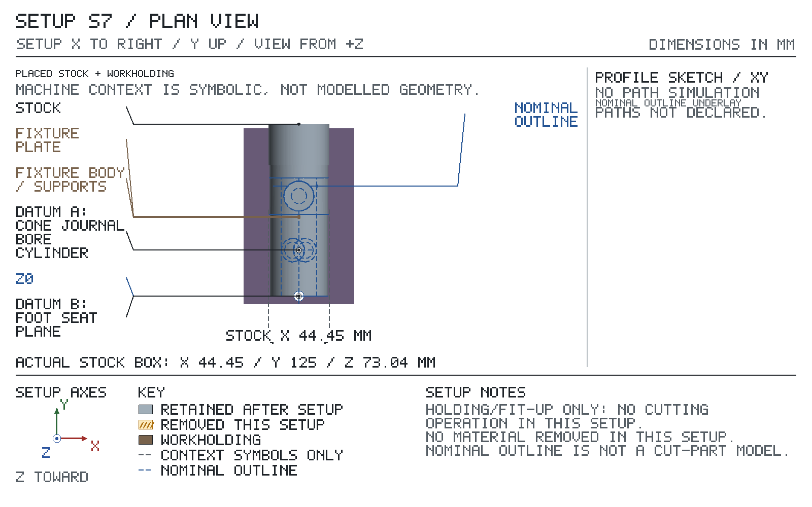
Turn the part over: the other face up, the +X end moves to −Y. Starts from: part as it arrives from Setup S7 — top at Z 1.005, bottom at Z -72.030 (top Z = −21.365 − its Setup S7 Z). post turned crank-sleeve north face up; the sleeve is solid, so the drill goes through its full length. Break-through depths are set for the longest sleeve the S3 op 50 hold allows (72.08), so the exit Zs in the operations sit below the feature map's nominal 72.03 sleeve end. The edge of the north cone cap stands 1.00 mm above the sleeve face.
| grip length mm | stickout mm |
|---|---|
| 20.000 | 105.000 |
Index: BS-0: index pin in the zero hole. Lock the spindle before cutting.
Coolant: CRC cutting oil brushed on.
Break edges 0.100 mm max in this setup, not the drawing's 0.25: light edge break on the reamed crank bore.
| T | tool | insert / size / material | holder / station | ops |
|---|---|---|---|---|
| T1 | #2 CD | right-hand, Ø1.980, shank Ø4.762, flute 1.900, 2 flutes, M42, projection 27.000 from holder face | drill chuck | 10 |
| T2 | 11.2 mm drill | Ø11.200, flute 94.000, 2 flutes, HSS, projection 121.000 from holder face | drill chuck | 20 |
| T3 | 11.43 mm 0.4500 in chucking reamer | Ø11.430, shank Ø10.050, flute 44.500, 6 flutes, HSS, projection 150.000 from holder face | drill chuck | 30 |
Positive directions: X+ tool moves right relative to the work (table moves left); Y+ tool moves away from you relative to the work (table moves toward you); Z+ tool moves up. Axis Set each axis (never Preset), then make the check jog: the display must show 'must read'; 'if reversed' means STOP, fix the axis direction and redo the zero.
Before zeroing: align the work on the head, foot seat, crank boss with the dial test indicator: run the indicator along the length of each surface by table travel; while it reads more than 0.02 mm total indicator reading, loosen the clamping, tap the high end of the work toward the low reading, re-clamp and sweep again.
| axis | touch / pick up | Axis Set | check jog | must read | if reversed |
|---|---|---|---|---|---|
| X | foot seat; 0.2 in edge finder; from +X side; surface at 0.000; edge-finder radius 2.540; speed, kick-out and offset: EDGE FINDER box, Setup S4 sheet 1 | 2.540 | +X 10.000 | 12.540 | -7.460 |
| Y | body; indicate: DTI in the spindle; sweep across the body in Y and move the table until the highest reading (the crest) is under the spindle; then Axis Set Y | 0.000 | +Y 10.000 | 10.000 | -10.000 |
| Z | crank boss faces; touch it, then set; T1 #2 CD; from +Z side; surface at 0.000; direct contact, no paper | 0.000 | +Z 10.000 | 10.000 | -10.000 |
X and Y check jog, after each Axis Set:
Before op 20, install T2 11.2 mm drill, then re-touch it: Z — on the crank boss faces (Z 0.000): touch it, then set, no paper; Axis Set Z 0.000.
Before op 30, install T3 11.43 mm 0.4500 in chucking reamer, then re-touch it: Z — on the crank boss faces (Z 0.000): touch it, then set, no paper; Axis Set Z 0.000.
| SETUP S8 — sheet 1 (continued): operations | ||||||||
|---|---|---|---|---|---|---|---|---|
| op | do | feature | tool | rpm | feed | Z tip | direction | inspection: limit, gauge |
| 10 | spot | crank bore | T1 | 3000 | 120 mm/min | tool axis X -72.885, Y 0.000 Z 0.000 → -2.000 depth 2.000 | — | — |
The spot sits 0.185 off the sleeve centre, toward the head top: the crank bore is aimed there to hold the 39.517 separation. | ||||||||
| 20 | drill | crank bore | T2 | 550 | 61 mm/min | tool axis X -72.885, Y 0.000 Z 0.000 → -75.940 breaks through at -72.080 | — | — |
Drill through the solid sleeve, pecking every 6 mm and clearing chips fully; this leaves 0.23 mm on diameter for the reamer. Break through: the full diameter runs at least 0.495 past the exit face. | ||||||||
| 30 | ream | crank bore | T3 | 400 | 101 mm/min | tool axis X -72.885, Y 0.000 Z 0.000 → -73.580 breaks through at -72.080 | — | Ø 11.413–11.443: bore gauge |
Use the reamer whose S4 trial bore read in the band. Ream with cutting oil and a steady feed; run the lead out of the far end of the sleeve. Break through: the full diameter runs at least 0.500 past the exit face. | ||||||||
Sign off: __________ First article / measured results: ____________________
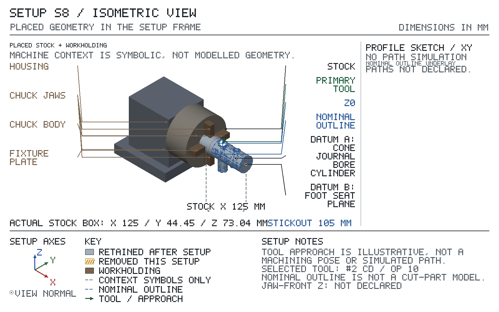
Spindle-to-table over the dividing head: needs 392.389 of 431.800: fits.
X travel: needs 160.000 of 584.200: fits.
Y travel: needs 150.000 of 222.250: fits.
| op | tool | closest obstacle | clearance mm | action |
|---|---|---|---|---|
| 10 | T1 | chuck jaw 1 beside the cut | 6.900 | |
| 20 | T2 | chuck jaw 1 beside the cut | 14.021 | |
| 30 | T3 | tool shank to the Ø11.43 bore this op cuts | 0.690 |
| feature | reference point | X | Y | Z |
|---|---|---|---|---|
| crank bore | hole axis | -72.885 | 0.000 | -21.375 |
The op table gives the tool targets. Crank bore: machine at X -72.885, 0.185 off the drawing nominal -72.700 — intentional; inspect its separation from the journal bore to 39.34–39.70 (aimed at 39.517).
Starts from: part as it arrives from Setup S8 — top at Z 23.255, bottom at Z -51.830. the post turned 12.5182 degrees on the index so the north cone cap is up; the edge of the crank sleeve north face is the highest point. Break-through depths are set for the longest sleeve the S2 op 50 hold allows (42.08 cap to cap), so the exit Zs in the operations sit below the feature map's nominal south-cap face.
| grip length mm | stickout mm |
|---|---|
| 20.000 | 105.000 |
Index: BS-0: plate B, 23-hole circle: 1 crank turn + 9 hole spaces (count spaces, not holes), turning the work counterclockwise viewed from the free end of the work (from setup +X, looking at the chuck). This setting turns the work 12.5217°, 0.0035° off the planned 12.5182° (allowed ±0.0795°). Take up the worm backlash: always crank so the work turns that same way; if the pin overshoots the hole, back off past it and come again the same way. Lock the spindle before cutting.
Coolant: CRC cutting oil brushed on.
Break edges 0.100 mm max in this setup, not the drawing's 0.25.
| T | tool | insert / size / material | holder / station | ops |
|---|---|---|---|---|
| T1 | #2 CD | right-hand, Ø1.980, shank Ø4.762, flute 1.900, 2 flutes, M42, projection 27.000 from holder face | drill chuck | 10 |
| T2 | 12.05 mm drill | Ø12.050, flute 101.000, 2 flutes, HSS, projection 130.000 from holder face | drill chuck | 20 |
| T3 | 12.281 mm 0.4835 in chucking reamer | Ø12.281, shank Ø11.060, flute 44.500, 6 flutes, HSS, projection 150.000 from holder face | drill chuck | 30 |
Positive directions: X+ tool moves right relative to the work (table moves left); Y+ tool moves away from you relative to the work (table moves toward you); Z+ tool moves up. Axis Set each axis (never Preset), then make the check jog: the display must show 'must read'; 'if reversed' means STOP, fix the axis direction and redo the zero.
Before zeroing: check the work on the head, foot seat, cone boss north face with the dial test indicator: run the indicator along the length of each surface by table travel; it must read 0.02 mm total indicator reading or less. Do not loosen the work to correct it; if it reads more: 1) Unlock the spindle, index back to the zero hole (the S8 position) and lock it. 2) With the DTI in the spindle, run the tip down the reamed Ø11.43 crank-bore wall by quill feed, once on the -Y side and once on the +Y side. 3) Each reading holds within one dial division (0.0005 in) over the bore depth: the post has not turned, the head has moved. Re-align the head as in S4 (tap the head body on the table, never the work, until the top and side sweeps of the body along X each read within 0.01 mm, then tighten the head bolts), re-index to the plate setting and sweep again. The zeros stand. 4) A reading moves more than one division: the post has turned in the jaws. This is the only case that moves the work: ease one jaw, turn the post until both bore-wall readings hold one division, re-tighten each jaw a little at a time while indicating the head and body to 0.02 mm, re-index, then set the Y, X and Z zeros again from the start of this table.
| axis | touch / pick up | Axis Set | check jog | must read | if reversed |
|---|---|---|---|---|---|
| X | foot seat; 0.2 in edge finder; from +X side; surface at 0.000; edge-finder radius 2.540; speed, kick-out and offset: EDGE FINDER box, Setup S4 sheet 1 | 2.540 | +X 10.000 | 12.540 | -7.460 |
| Y | body; indicate: DTI in the spindle; sweep across the body in Y and move the table until the highest reading (the crest) is under the spindle; then Axis Set Y | 0.000 | +Y 10.000 | 10.000 | -10.000 |
| Z | cone boss north face; touch it, then set; T1 #2 CD; from +Z side; surface at 21.010; direct contact, no paper | 21.010 | +Z 10.000 | 31.010 | 11.010 |
X and Y check jog, after each Axis Set:
Before op 20, install T2 12.05 mm drill, then re-touch it: Z — on the cone boss north face (Z 21.010): touch it, then set, no paper; Axis Set Z 21.010.
Before op 30, install T3 12.281 mm 0.4835 in chucking reamer, then re-touch it: Z — on the cone boss north face (Z 21.010): touch it, then set, no paper; Axis Set Z 21.010.
| SETUP S9 — sheet 1 (continued): operations | ||||||||
|---|---|---|---|---|---|---|---|---|
| op | do | feature | tool | rpm | feed | Z tip | direction | inspection: limit, gauge |
| 10 | spot | journal bore | T1 | 3000 | 120 mm/min | tool axis X -33.370, Y 0.000 Z 21.010 → 19.010 depth 2.000 | — | — |
Spot the centre of the north cap, where the journal axis crosses the post axis. | ||||||||
| 20 | drill | journal bore | T2 | 500 | 55 mm/min | tool axis X -33.370, Y 0.000 Z 21.010 → -25.190 breaks through at -21.070 | — | — |
Drill through the solid sleeve cap to cap, pecking every 8 mm; this leaves 0.23 mm on diameter for the reamer. Break through: the full diameter runs at least 0.495 past the exit face. | ||||||||
| 30 | ream | journal bore | T3 | 350 | 88 mm/min | tool axis X -33.370, Y 0.000 Z 21.010 → -22.570 breaks through at -21.070 | — | Ø 12.256–12.285: bore gauge height 33.12–33.61: caliper |
Use the reamer whose S4 trial bore read in the band. Ream datum A through the sleeve cap to cap; run the lead out of the south cap. Break both rims 0.1 mm maximum by hand. Check the diameter at both ends and the height from foot B. Break through: the full diameter runs at least 0.495 past the exit face. | ||||||||
Sign off: __________ First article / measured results: ____________________
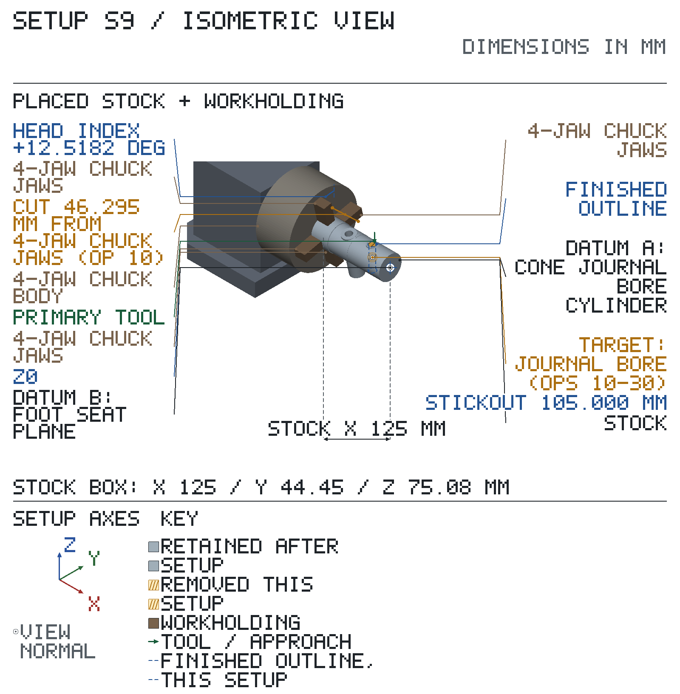
Spindle-to-table over the dividing head: needs 393.265 of 431.800: fits.
X travel: needs 160.000 of 584.200: fits.
Y travel: needs 150.000 of 222.250: fits.
| op | tool | closest obstacle | clearance mm | action |
|---|---|---|---|---|
| 10 | T1 | holder face to stock under the holder at Z 21.005 | 25.000 | |
| 20 | T2 | spindle-to-table room spare, tool change allowed | 58.535 | |
| 30 | T3 | spindle-to-table room spare, tool change allowed | 38.535 |
| feature | reference point | X | Y | Z |
|---|---|---|---|---|
| journal bore | hole axis on the Z0 surface | -33.370 | 0.000 | 0.000 |
The op table gives the tool targets.
the post lies in a shop-made saw cradle gripped by the bandsaw vise; the raw tail overhangs the cradle end and falls clear after the cut.
Turn the part over: the other face up, the +X end stays at +X. Starts from: part as it arrives from Setup S9 — top at Z 51.832, bottom at Z -23.253 (each Z = 0.002 − its Setup S9 Z). post horizontal, cone cross-bore vertical; the crank sleeve's far end rim is the highest point and the low rim of its north face the lowest, 6.75 mm above the cradle base.
Coolant: none: dry cut.
Break edges 0.100 mm max in this setup, not the drawing's 0.25: retain the finished journal's 0.1 mm maximum rim break.
2 in R8 boring head (job purchase): bought finished, accepted on receipt — PURCHASED TOOLING / RECEIPT CHECK table, Setup S6 sheet 1.
| T | tool | insert / size / material | holder / station | ops |
|---|---|---|---|---|
| T1 | 4/6 pitch bi-metal blade | M42 | — | 10 |
| SETUP S10 — sheet 1 (continued): operations | ||||||||
|---|---|---|---|---|---|---|---|---|
| op | do | feature | tool | speed | feed | cut target | direction | inspection: limit, gauge |
| 10 | saw cut, blade centre X -1.75 mm | stock | T1 | 200 sfm | 65 mm/min | retained edge -1 mm | keep above | — |
With the post clamped, slide the cradle in the open saw vise until the blade touches the scribed line, then close the vise on the cradle base; the 1.5 mm kerf leaves the post 87 mm from foot B to the sawn top, and the cradle base ends 3 mm on the kept side of the kerf. Set the blade guides outside the 44.45 mm tail. Feed: set the bow's downfeed control (the hydraulic cylinder valve, or the spring where the saw has no cylinder) so the blade sinks about 1 mm a second, 65 mm/min: about 10 mm in 10 s against a steel rule held beside the bow, and about 40 s through the post. That averages 3.4 sq in/min over the 2.25 sq in section, under the MH 27th p.1140 cutting-rate graph's about 4.8 sq in/min for a 4/6 blade at 200 fpm; p.1140 says to start there and adjust by the chips. Then judge by the chips: curly, silvery and warm is right; burned and heavy, ease the feed; thin or powdery, feed harder. A new blade: start at a light feed and build up over its first few cuts (MH 27th p.1142). Saw with the blade centred on the line; the tail drops clear as the cut breaks through, leaving 1 mm on the head top for S11. | ||||||||
Sign off: __________ First article / measured results: ____________________
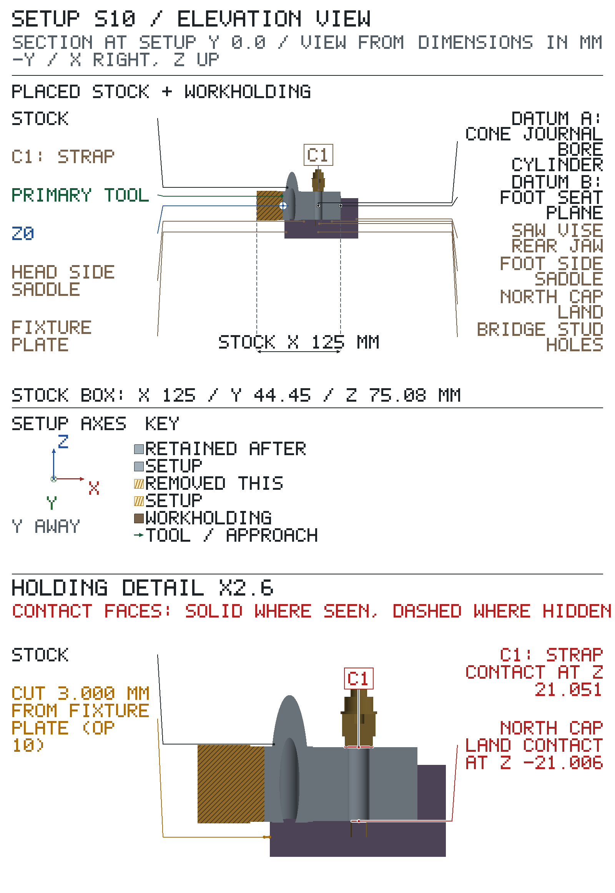
Make before Setup S10. Positions are in the Setup S10 frame: boxes give their X / Y / Z extents, cylinders their axis.
| Component | Size mm | Position, Setup S10 X / Y / Z mm | Locates | Fastener |
|---|---|---|---|---|
| cradle block base, 1018 steel † | 95 × 100 × 19 | X 2…97, Y -50…50, Z -49…-30 with 2 × 3/8-16 tapped through, 5/16 in (Ø7.94) tap drill (MH 27th Table 3 p.1933): axis at X 52.63, Y 30; Z -49.5…-29.5; axis at X 52.63, Y -30; Z -49.5…-29.5 | — | — |
| head saddle, 1018 steel (block) † | 13 × 48 × 20 | X 28.5…41.5, Y -24…24, Z -30…-10 with 1 × Ø43.6 hole: axis at Y 0, Z 0.795; X 27.5…42.5 | body Ø42 | integral with the base |
| foot saddle, 1018 steel (block) † | 14 × 48 × 20 | X 66…80, Y -24…24, Z -30…-10 with 1 × Ø43.6 hole: axis at Y 0, Z 0.795; X 65…81 | body Ø42 | integral with the base |
| north-cap land, 1018 steel (block) † | 8 × 28 × 8.995 | X 48.63…56.63, Y -14…14, Z -30…-21.005 | north cap annulus | integral with the base; fitted to suit the post |
Make: cradle block base, 1018 steel: one piece with both saddles and the north-cap land (no screws, no dowels): 1018 flat 1-3/4 x 4 in (stock), sawn 99 long and six faces milled to 95 x 100 x 39.0 overall; then milled down to the base top, 19.0 above the underside, everywhere but the two saddles and the land, the land left 30.0 above the underside for fitting; drill the two stud holes 5/16 in (Ø7.94) through and tap 3/8-16 by hand (drill-index-115; taps-unc-hand/3-8-16-plug in tap-wrench-t-7-32-1-2; MH 27th Table 3 p.1933); bore both seats Ø43.6 on one axis with the boring head (2 in R8 boring head (job purchase)), the seat bottoms 8.99 above the base top, so the largest printed body bottoms on the seat line; then fit the land to suit the post (cap bears with body seated); every step is in the Make operations; head saddle, 1018 steel (block), foot saddle, 1018 steel (block): milled from the solid with the base and bored with the other saddle on one axis: see the base row and the Make operations; north-cap land, 1018 steel (block): milled from the solid with the base, left 30.0 above the underside, then fitted to suit the post: milled down until its north cap bears on the land with the body seated in both seats (Make operations).
Make operations, in order:
1. hold: vise on parallels: 1-3/4 x 4 in 1018 flat (stock) sawn 99 long; 3/4 in end mill in the 3/4 in R8 collet, 57 out; first face up, then each finished face against the fixed jaw; Z0 where the cutter just marks the face, the last 0.2 to the micrometer size; six faces to 95 x 100 x 39.0 overall, opposite faces parallel within 0.02 (height gauge on the surface plate); T: 3/4 in 4fl EM; 560 rpm; 0.076 mm/tooth; 1 mm/pass; MH 27th Table 11 p.1045 HSS end milling 1018 at 125-175 HB 110 fpm = 560 rpm at 3/4 in; Table 15a p.1054 .003 in/tooth for a 3/4 in end mill at .050 in depth
2. hold: vise, underside down on a 1-1/4 in pair of parallels, the jaws on its 95 mm sides (jaw tops 13.2 above the underside, 5.8 under the base-top line); 3/4 in end mill in the 3/4 in R8 collet, 57 out; DRO zero: 0.2 in edge finder at 1000 rpm, the axis 2.54 off the face at the kick-out, on the kerf-side end, X2.00 there, and on both 95 mm sides split for Y0; Z0 where the cutter just marks the top (39.0 above the underside); leave standing the head saddle X28.50 to X41.50, the foot saddle X66.00 to X80.00 (both Y-24.00 to Y24.00) and the north-cap land X48.63 to X56.63, Y-14.00 to Y14.00; mill the land top to Z-9.00 (30.0 above the underside, the print reference height, left for fitting) and everything else the cutter reaches down to Z-20.00 (the base top, 19.0 above the underside), keeping its edge out of the land and saddle footprints; T: 3/4 in 4fl EM; 560 rpm; 0.076 mm/tooth; 1 mm/pass; MH 27th Table 11 p.1045 HSS end milling 1018 at 125-175 HB 110 fpm = 560 rpm at 3/4 in; Table 15a p.1054 .003 in/tooth for a 3/4 in end mill at .050 in depth
3. hold: same setting and zero; 1/4 in end mill in the 3/8 in R8 collet, 25 out; what the 3/4 in cutter could not reach beside the land: the 7.13 gap to the head saddle and the 9.37 gap to the foot saddle, down to Z-20.00 in 1.0 steps, finishing the land faces at X48.63 and X56.63 and its ends at Y-14.00 and Y14.00; T: 1/4 in 4fl EM; 1600 rpm; 0.025 mm/tooth; 1 mm/pass; MH 27th Table 11 p.1045 HSS end milling 1018 at 125-175 HB 110 fpm = 1680 rpm at 1/4 in; Table 15a p.1054 .001 in/tooth for a 1/4 in end mill at .050 in depth
4. hold: same setting and zero; 5/16 in drill in drill chuck, 93.7 out; both stud holes at X52.63 Y-30.00 and Y30.00 from the base top, through the 19.0 base clear of the parallels, the point 2 past; tapped 3/8-16 by hand afterwards; T: 5/16 in drill; 1000 rpm; 0.13 mm/rev; 3 mm/pass; MH 27th Table 17 p.1061 HSS drilling 1018 90 fpm = 1100 rpm at 0.3125 in; p.1060 feed .004-.010 in/rev for that drill size; Table 3 p.1933 3/8-16 tap drill 5/16 in (Ø7.94)
5. hold: block off the vise, underside down on the PM-30MV table, strapped down with the straps of clamping kit on the base top at both ends, clear of the seats and the land, a 95 mm side trammed along table X within 0.02 (dial test indicator on magnetic base); head tilted 90°, spindle along table X; boring head on its R8 shank in the spindle, 1/2 in bar 38 out of the head; axis height: 0.2 in edge finder at 1000 rpm, the axis 2.54 off the face at the kick-out, lowered onto the base top, then the head raised 28.25 on the Z DRO (axis 30.79 above the base top) and locked; across: the edge finder on both 95 mm sides, split for Y0; both seats Ø43.6 on that one axis, the seat bottoms 8.99 above the base top (height gauge), the bar entering each seat from the nearer base end; T: 2 in R8 boring head (job purchase); 450 rpm; 0.05 mm/rev; 0.5 mm/pass; MH 27th Table 1 p.1027 1018 at 125-175 HB: HSS 110 fpm (254 rpm at Ø42), uncoated carbide (tough) 345-470 fpm (800-1090 rpm), feed avg .017 in/rev; boring takes the turning data (p.1082). AUTHOR'S CHOICE: 450 rpm (195 fpm) and .002 in/rev, between the HSS and carbide speeds, because the offset head runs unbalanced on a 1/2 in bar
6. hold: land fit, after boring: cradle read on the surface plate first: height gauge carrying dial test indicator, each seat bottom swept across Y for its lowest reading, then the land top; strapped back on the PM-30MV table as before, head at 0° and trammed; 3/4 in end mill in the 3/4 in R8 collet, 57 out; Z0 where the cutter just marks the land top; take the land down by its excess over the mean seat bottom, less 0.10, in passes of 0.5 or less; then fit it to the post from Setup S9: layout blue on its north cap, the post laid in both seats; while it rocks on the land (dial test indicator on magnetic base on the body over a seat moves more than 0.005 as the far end is pressed) take 0.02 a pass, the last ones 0.01, until it no longer rocks and the cap prints on the land: the cap bears with the body seated; T: 3/4 in 4fl EM; 560 rpm; 0.076 mm/tooth; 0.02 mm/pass; MH 27th Table 11 p.1045 HSS end milling 1018 at 125-175 HB 110 fpm = 560 rpm at 3/4 in; Table 15a p.1054 .003 in/tooth for a 3/4 in end mill at .050 in depth
Make before Setup S10. Positions are in the Setup S10 frame: boxes give their X / Y / Z extents, cylinders their axis.
| Component | Size mm | Position, Setup S10 X / Y / Z mm | Locates | Fastener |
|---|---|---|---|---|
| pad, C360 brass † | 16 × 16 × 6 | X 44.63…60.63, Y -8…8, Z 21.05…27.05 with 1 × 82° countersink, Ø13.6 mouth, Ø12.7 at 0.5 deep; drawn as the head envelope Ø12.7 x 4.1: axis at X 52.63, Y 0; Z 21.05…25.15 | south cap annulus | 1 × 1/4-20 × 1/2 in flat-head cap screw from the pad face, on the pad centre: 9/32 in clearance (MH 27th Table 5 p.1621), 82° countersink until the cone reaches Ø12.7 0.5 below the face (Ø13.6 mouth), so the head sits 0.5 below the face |
| beam, 1018 steel † | 76 × 19 × 12.7 | X 43.1…62.1, Y -38…38, Z 27.05…39.8 with 2 × Ø10.3 hole: axis at X 52.63, Y 30; Z 26.1…42.1; axis at X 52.63, Y -30; Z 26.1…42.1 with 1 × 1/4-20 tapped through, #7 (0.201 in) tap drill (MH 27th Table 3 p.1933): axis at X 52.63, Y 0; Z 26.6…40.3 | — | — |
Bought hardware (not made): 2 × 3/8-16 x 3-3/4 in stud; 2 × washer Ø20.6 × 1.6; 2 × 3/8-16 hex nut; 1 × 1/4-20 × 1/2 in flat-head cap screw.
Make: pad, C360 brass: C360 brass, a 7 mm slice sawn from the Ø1 in C360 rod (stock), six faces milled to 16 x 16 x 6 with the two broad faces parallel within 0.02; drill 9/32 in through on the centre and countersink 82° until the head of the flat-head screw sits 0.5 below the face, a Ø13.6 mouth (drill-index-115, 19.05 mm countersink); edges broken; screwed to the beam with its edges square to the beam sides; beam, 1018 steel: 1018 flat 5/8 x 1 in (stock), sawn 80 long and six faces milled to 76 x 19.0 x 12.7; drill the two stud clearances 13/32 in (0.406 in) through at ±30 from the centre at 750 rpm (drill-index-115; 3/8 normal fit MH 27th Table 5 p.1621, the bore of the 3/8 SAE washers; 1018 at 125-175 HB, HSS drilling 90 fpm MH 27th Table 17 p.1061 -> 847 rpm) and drill #7 and tap 1/4-20 through on the centre (drill-index-115; taps-unc-hand/1-4-20-plug in tap-wrench-t-1-16-1-4); edges broken.
Make operations, in order:
1. hold: pad: a 7 mm slice of the Ø1 in C360 rod (stock), sawn on the bandsaw; vise on parallels; 3/4 in end mill in the 3/4 in R8 collet, 57 out; the two flat faces first, then the four sides, each finished face against the fixed jaw; Z0 where the cutter just marks the face, the last 0.2 to the micrometer size; six faces to 16 x 16 x 6, the broad faces parallel within 0.02; T: 3/4 in 4fl EM; 1500 rpm; 0.12 mm/tooth; 1 mm/pass; MH 27th Tables 10-14 give no milling speed for copper alloys: AUTHOR'S CHOICE: 1500 rpm (295 fpm at 3/4 in), under the Table 6 p.1037 HSS turning speed for free-cutting brass C36000 cold drawn, 350 fpm (1780 rpm), because an end mill's interrupted cut is run below the continuous turning speed; Table 15a p.1055 free-cutting brasses .005 in/tooth for a 3/4 in end mill at .050 in depth
2. hold: pad flat on parallels in vise; 9/32 in drill in drill chuck, 87.4 out; DRO zero: 0.2 in edge finder at 1000 rpm, the axis 2.54 off the face at the kick-out, on two adjacent sides, X-8.00 and Y-8.00 there; the hole on the centre, X0 Y0, through the 6, the point 2 past; T: 9/32 in drill; 2300 rpm; 0.13 mm/rev; 3 mm/pass; MH 27th Table 23 p.1072 HSS drilling free-cutting brass C36000 cold drawn 175 fpm = 2380 rpm at 0.281 in; p.1060 .004-.010 in/rev for 1/4-1/2 in drills; Table 5 p.1621 1/4 in clearance
3. hold: pad, same setting and zero; 82° countersink (19.05 mm countersink) in the 1/4 in R8 collet, 30 out; spindle off, lower it into the 9/32 hole until its flute touches the hole edge, set the quill stop 3.70 below that: the cone reaches Ø12.7 0.5 below the face (Ø13.6 mouth); check with the flat-head screw, its head 0.5 below the face (caliper depth rod); T: 19.05 mm countersink; 400 rpm; 0.05 mm/rev; 3.7 mm/pass; MH 27th Table 23 p.1072 HSS drilling free-cutting brass C36000 cold drawn 175 fpm = 1300 rpm at the Ø13.6 mouth; AUTHOR'S CHOICE: 400 rpm and .002 in/rev, hand-fed, because a single-flute countersink chatters in brass at the drilling speed
4. hold: beam: 1018 flat 5/8 x 1 in (stock), sawn 80 long; vise on parallels; 3/4 in end mill in the 3/4 in R8 collet, 57 out; first face up, then each finished face against the fixed jaw; Z0 where the cutter just marks the face, the last 0.2 to the micrometer size; six faces to 76 x 19.0 x 12.7; T: 3/4 in 4fl EM; 560 rpm; 0.076 mm/tooth; 1 mm/pass; MH 27th Table 11 p.1045 HSS end milling 1018 at 125-175 HB 110 fpm = 560 rpm at 3/4 in; Table 15a p.1054 .003 in/tooth for a 3/4 in end mill at .050 in depth
5. hold: beam flat on parallels in vise, its 12.7 thickness vertical; 13/32 in drill in drill chuck, 112.8 out; DRO zero: 0.2 in edge finder at 1000 rpm, the axis 2.54 off the face at the kick-out, on one end, X-38.00 there, and on one long side, Y-9.50 there; both stud clearances at X±30.00 Y0, through, the point 2 past; T: 13/32 in drill; 750 rpm; 0.15 mm/rev; 3 mm/pass; MH 27th Table 17 p.1061 HSS drilling 1018 90 fpm = 847 rpm at 0.406 in; p.1060 feed .004-.010 in/rev for that drill size; Table 5 p.1621 3/8 normal fit
6. hold: beam, same setting and zero; #7 drill in drill chuck, 71.5 out; on the centre, X0 Y0, through, the point 2 past; tapped 1/4-20 by hand afterwards; T: #7 drill; 1500 rpm; 0.10 mm/rev; 3 mm/pass; MH 27th Table 17 p.1061 HSS drilling 1018 90 fpm = 1710 rpm at 0.201 in; p.1060 feed .002-.006 in/rev for that drill size; Table 3 p.1933 1/4-20 tap drill #7
Starts from: part as it arrives from Setup S10 — top at Z 87.000, bottom at Z 0.000. foot B down after the saw cut; 1 mm facing allowance above the head top Z86.
| grip length mm | jaw top above parallels mm | work top above jaw tops mm | jaw centre at X | parallels at (X, Y) |
|---|---|---|---|---|
| 15.000 | 50.800 | 36.200 | 0.000 | (0.000, -19.400); (0.000, 19.400) |
Coolant: CRC cutting oil brushed on.
| T | tool | insert / size / material | holder / station | ops |
|---|---|---|---|---|
| T1 | 3/4 in 4fl EM | Ø19.050, flute 33.300, HSS, TiN, projection 57.000 from holder face | R8 3/4 in collet | 10 |
| T2 | 9.525 mm spot drill | Ø9.525, flute 15.000, 2 flutes, M42, projection 31.000 from holder face | drill chuck | 20, 30 |
| T3 | 9/32 in drill | Ø7.144, flute 108.000, 2 flutes, HSS, projection 133.000 from holder face | R8 9/32 in collet | 40, 50 |
| T4 | 7/16 in 2fl EM | Ø11.113, shank Ø9.525, flute 25.400, HSS, TiN, projection 41.000 from holder face | R8 3/8 in collet | 60, 70 |
Positive directions: X+ tool moves right relative to the work (table moves left); Y+ tool moves away from you relative to the work (table moves toward you); Z+ tool moves up. Axis Set each axis (never Preset), then make the check jog: the display must show 'must read'; 'if reversed' means STOP, fix the axis direction and redo the zero.
Before zeroing: align the work on the head, foot seat, crank boss with the dial test indicator: run the indicator along the length of each surface by table travel; while it reads more than 0.02 mm total indicator reading, loosen the clamping, tap the high end of the work toward the low reading, re-clamp and sweep again.
| axis | touch / pick up | Axis Set | check jog | must read | if reversed |
|---|---|---|---|---|---|
| X | head; indicate: DTI in the spindle; turn the spindle by hand to sweep the head all round and move the table until the reading is the same all round; then Axis Set X | 0.000 | +X 10.000 | 10.000 | -10.000 |
| Y | head; indicate: DTI in the spindle; turn the spindle by hand to sweep the head all round and move the table until the reading is the same all round; then Axis Set Y | 0.000 | +Y 10.000 | 10.000 | -10.000 |
| Z | top; touch it, then set from the measured M; T1 3/4 in 4fl EM; from +Z side; direct contact, no paper; measure with height gauge; M = before clamping: stand the part foot B down on the surface plate and height gauge the sawn top at its high spot (nominal 87.0); touch T1 on that high spot in the vise | M + 0.000 | +Z 10.000 | M + 10.000 | M − 10.000 |
X and Y check jog, after each Axis Set:
M puts the raw top at Z = M; the ops' levels start from Z 87.000. If M is above Z 87.000, first face the top down to Z 87.000, no more than 0.500 per pass.
Before op 20, install T2 9.525 mm spot drill, then re-touch it: Z — on the head (Z 86.000): touch it, then set, no paper; Axis Set Z 86.000.
Before op 40, install T3 9/32 in drill, then re-touch it: Z — on the head (Z 86.000): touch it, then set, no paper; Axis Set Z 86.000.
Before op 60, install T4 7/16 in 2fl EM, then re-touch it: Z — on the head (Z 86.000): touch it, then set, no paper; Axis Set Z 86.000.
| SETUP S11 — sheet 1 (continued): operations | ||||||||
|---|---|---|---|---|---|---|---|---|
| op | do | feature | tool | rpm | feed | Z tip | direction | inspection: limit, gauge |
| 10 | face, 0.500 mm axial per pass | head | T1 | 450 | 90 mm/min | Z 87.000 → 86.000 in 2 levels of 0.500 max | conventional | height 25.8–27.4: height gauge |
One sequence whatever M reads: while the top is above Z87.000, run the sheet 3 raster at 0.5 mm levels from M down to Z87.000 (the DRO ZERO pre-facing); then run it at the two listed levels, Z86.500 and Z86.000, which finish the top. The raster X/Y path is the same at every level. See contour table on S11 sheet 3 | ||||||||
| 20 | spot | mount west | T2 | 700 | 28 mm/min | tool axis X -12.670, Y 2.815 Z 86.000 → 84.000 depth 2.000 | — | — |
Spot with the short 3/8 in spotting drill, not a centre drill: its 120° cone guides the long drill's point. | ||||||||
| 30 | spot | mount east | T2 | 700 | 28 mm/min | tool axis X 12.670, Y -2.815 Z 86.000 → 84.000 depth 2.000 | — | — |
| 40 | drill | mount west | T3 | 850 | 94 mm/min | tool axis X -12.670, Y 2.815 Z 86.000 → -4.145 breaks through at 0.000 | — | Ø 7.15–7.24: pin gauge station 12.47–13.49: caliper |
Enter the spot at the lowest speed with a light hand feed until the full diameter is 7 mm (one diameter) deep and running true; then peck every 6 mm at the listed speed, clearing chips fully. Ease the feed where the drill crosses the crank sleeve wall and at the breakout through foot B. Break through: the full diameter runs at least 1.998 past the exit face. | ||||||||
| 50 | drill | mount east | T3 | 850 | 94 mm/min | tool axis X 12.670, Y -2.815 Z 86.000 → -4.145 breaks through at 0.000 | — | Ø 7.15–7.24: pin gauge station 12.47–13.49: caliper |
Repeat on the second hole, starting it the same way. Break through: the full diameter runs at least 1.998 past the exit face. | ||||||||
| 60 | counterbore, 0.500 mm axial per pass | mount west counterbore | T4 | 600 | 30 mm/min | tool axis X -12.670, Y 2.815 Z 86.000 → 79.985 depth 6.015 | — | Ø 11.00–12.02: caliper depth 5.51–6.53: caliper |
Plunge the centre-cutting 7/16 in end mill to a flat seat 6.02 mm below the head top; the 11.11 mm cutter is inside the 11.0-12.02 mm band. | ||||||||
| 70 | counterbore, 0.500 mm axial per pass | mount east counterbore | T4 | 600 | 30 mm/min | tool axis X 12.670, Y -2.815 Z 86.000 → 79.985 depth 6.015 | — | Ø 11.00–12.02: caliper depth 5.51–6.53: caliper |
| 75 | deburr | head | — | — | — | — | — | — |
Off the vise, by hand with a file, a stone and a hand countersink: break the head-top rim, both counterbore rims, both mount-hole exits at foot B and the foot B rim to R0.25 or 0.25 chamfer max. Leave the reamed bore walls alone; their rims keep the 0.1 mm breaks from S8 and S9. Blow out the mount holes. | ||||||||
| 80 | inspect | body | — | — | — | — | — | Ø 41.2–42.8: 1-2 in mic height 85.2–86.8: height gauge |
Off the vise: body diameter at three stations and the overall height from foot to head top on the surface plate. | ||||||||
| 90 | inspect | head | — | — | — | — | — | Ø 42.0–43.6: 1-2 in mic height 25.8–27.4: height gauge |
Head diameter, and head length from the shoulder to the top. | ||||||||
| 100 | inspect | journal bore | — | — | — | — | — | Ra 1.6: bore replica kit (replica compound + Ra comparator plate) [S11 sheet 2 note 1] Ø 12.256–12.285: bore gauge height 33.12–33.61: caliper |
Deburr inside the journal bore without enlarging it; cast it for Ra, then recheck diameter A and its height from B. | ||||||||
| 110 | inspect | crank bore | — | — | — | — | — | Ra 1.6: bore replica kit (replica compound + Ra comparator plate) [S11 sheet 2 note 2] Ø 11.413–11.443: bore gauge separation 39.34–39.70: height gauge [S11 sheet 2 note 3] angularity Ø 0.10: height gauge [S11 sheet 4 worksheet] |
Cast the crank bore for Ra first, then recheck its size, the crank-to-journal separation and the crank-bore angularity on the surface plate. | ||||||||
Sign off: __________ First article / measured results: ____________________
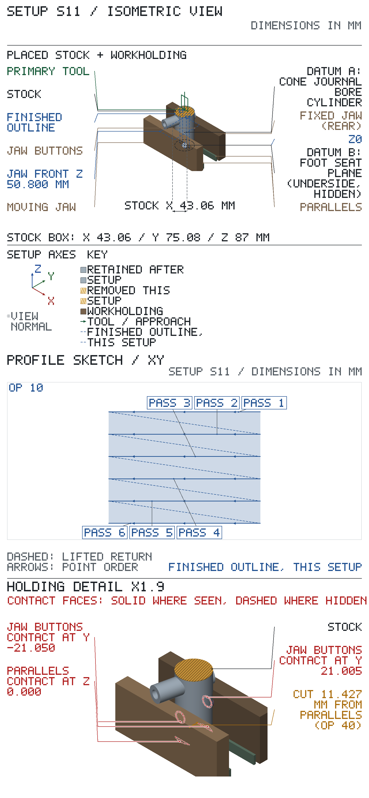
Make before Setup S11. Nothing poses it in the Setup S11 frame: set it where the HOLD says. Positions are in the item's own frame: boxes give their X / Y / Z extents, cylinders their axis.
| Component | Size mm | Position, its own frame (loose: placed as the HOLD says) X / Y / Z mm | Locates | Fastener |
|---|---|---|---|---|
| soft-jaw plates, 6061 aluminium † | 158.7 × 19.1 × 63.5 | fixed: X -79.35…79.35, Y 0…19.1, Z 0…63.5 moving: X -79.35…79.35, Y 40…59.1, Z 0…63.5 with 4 × M10 clearance, 7/16 in through: fixed: axis at X -50.8, Z 22.5; Y 0…19.1; fixed: axis at X 50.8, Z 22.5; Y 0…19.1; moving: axis at X -50.8, Z 22.5; Y 40…59.1; moving: axis at X 50.8, Z 22.5; Y 40…59.1 with 4 × M10 counterbore Ø17.46 (11/16 in) x 11.75 deep from the gripping face: fixed: axis at X -50.8, Z 22.5; Y 0…11.75; fixed: axis at X 50.8, Z 22.5; Y 0…11.75; moving: axis at X -50.8, Z 22.5; Y 40…51.75; moving: axis at X 50.8, Z 22.5; Y 40…51.75 | vise jaw face and the hardened plates' bolt seat | the vise's own 2 × M10 × 1.5 jaw screws, kept metric because they thread into the vise jaws (vendor: precisionmatthews.com VISE-6in-HIGHPREC, Jaw Mounting Bolt Threads: M10x1.5) |
Make: soft-jaw plates, 6061 aluminium: 6061 flat 1 x 3 in (stock), sawn 162 long, six faces milled on the PM-30MV to 158.7 long (the hardened plate's length) and 63.5 high, 0.10 over the table thickness for the in-place skim, faces parallel within 0.02 (height gauge on the surface plate). Take a hardened plate off, clamp it on the blank, bottom edges and ends flush, and spot through its two bolt holes; drill 7/16 in through (drill-index-115; M10 normal fit 10.80, MH 27th Table 21 p.1557) and counterbore from the gripping face with the 11/16 in end mill (endmills-lms-6784; M10 counterbore 17.25, MH 27th Table 21 p.1557) to the hardened plate's counterbore depth plus 1.25, so the vise's own screws reach the same thread. Bolt on with the bottom edge on the bed, then skim the gripping face 0.10 in place with the 3/4 in end mill (endmills-lms-6784) to 19.1 thick, so the two faces close parallel within 0.02 over their length; edges broken.
Make operations, in order:
1. hold: vise on parallels, each 1 x 3 in 6061 blank in turn; 3/4 in end mill in the 3/4 in R8 collet, 57 out; first face up, then each finished face against the fixed jaw; Z0 where the cutter just marks the face, the last 0.2 to the micrometer size; six faces to 158.7 long and 63.5 high, 0.10 over the table thickness; T: 3/4 in 4fl EM; 2000 rpm; 0.05 mm/tooth; 1.5 mm/pass; MH 27th Table 10 p.1044 HSS end milling wrought 6061 average .008 in/tooth at 850 fpm (4330 rpm at 3/4 in); AUTHOR'S CHOICE: 2000 rpm and .002 in/tooth on the hand-fed PM-30MV
2. hold: vise, plate on parallels gripping face up, clear of the holes; 7/16 in drill in drill chuck, 119.0 out; DRO zero: 0.2 in edge finder at 1000 rpm, the axis 2.54 off the face at the kick-out, on one end, X0 there, and on the bottom edge, Y0 there; a hardened plate clamped on the blank, ends and bottom edges flush, its two bolt holes spotted through with the drill; the spots read X 28.55 and X 130.15 (±50.8 from the centre), Y 22.5, within 0.1, before drilling through, the point 2 past; T: 7/16 in drill; 2500 rpm; 0.15 mm/rev; 3 mm/pass; MH 27th Table 21 p.1070 HSS drilling wrought 6061 350 fpm = 3056 rpm at 7/16 in; p.1060 .004-.010 in/rev, the higher values for aluminium; Table 21 p.1557 M10 normal fit
3. hold: vise, same setting and zero, from the gripping face; 11/16 in end mill in the 5/8 in R8 collet, 50 out; Z0 where it just marks the gripping face; each counterbore plunged 11.75 deep on the quill stop, the hardened plate's counterbore depth plus 1.25; T: 11/16 in 2fl EM; 1500 rpm; 0.05 mm/rev; 3 mm/pass; MH 27th Table 10 p.1044 HSS end milling wrought 6061 850 fpm (4720 rpm at 11/16 in); AUTHOR'S CHOICE: 1500 rpm, plunged by the quill; Table 21 p.1557 M10 counterbore
4. hold: plate bolted on the vise jaw, vise on the PM-30MV table with its jaw trammed along table X within 0.02 (dial test indicator on magnetic base); 3/4 in end mill in the 3/4 in R8 collet, 57 out, side-milling; Y0 where the cutter's side just marks the gripping face; skim the 0.10 to 19.1 thick (micrometer over the plate's top edge); T: 3/4 in 4fl EM; 2000 rpm; 0.05 mm/tooth; 0.1 mm/pass; MH 27th Table 10 p.1044 HSS end milling wrought 6061 average .008 in/tooth at 850 fpm (4330 rpm at 3/4 in); AUTHOR'S CHOICE: 2000 rpm and .002 in/tooth on the hand-fed PM-30MV
Make before Setup S11. Nothing poses it in the Setup S11 frame: set it where the HOLD says. Positions are in the item's own frame: boxes give their X / Y / Z extents, cylinders their axis.
| Component | Size mm | Position, its own frame (loose: placed as the HOLD says) X / Y / Z mm | Locates |
|---|---|---|---|
| jaw buttons, 6061 aluminium † | Ø15 × 3 | 1: axis at X 0, Y 0; Z 0…3 2: axis at X 25, Y 0; Z 0…3 | cone cap annulus (Ø15 under the Ø17.26 socket mouth) |
| jaw-button spigots, 6061 aluminium † | Ø12.2 × 2 | 1: axis at X 0, Y 0; Z 3…5 2: axis at X 25, Y 0; Z 3…5 | journal bore 12.256-12.285, 0.056-0.135 loose |
Make: jaw buttons, 6061 aluminium: 6061 Ø3/4 in round (stock), on the PM-1127VF-LB in the 3-jaw chuck: face the end, turn Ø15.0 for 8 mm, then turn the Ø12.2 +0/-0.05 (12.15-12.20) x 2.0 spigot on the end (0.056-0.135 loose in the 12.256-12.285 journal bore, so it enters by hand) with the shoulder faced square; part off 3.20 behind the shoulder, then grip the button on its rim and face the parted side to 3.00 ±0.02 thick, parallel to the shoulder within 0.02 (micrometer); break the edges. Make two; jaw-button spigots, 6061 aluminium: turned on the button blank, see the jaw-button row.
Make operations, in order:
1. hold: 6 in 3-jaw chuck on the PM-1127VF-LB, Ø3/4 in 6061 round 15 out; AR tool in qctp holder 1, 20 out, on centre height; face the end and set the lathe DRO Z0 on it, X set to the miked Ø after a skim cut; turn Ø15.0 to Z-8.0, turn the spigot to Ø12.15-12.20 (12.2 +0/-0.05, micrometer) to Z-2.0 and face the shoulder square at Z-2.0; T: AR turning/facing holder; 2000 rpm; 0.08 mm/rev; 1 mm/pass; MH 27th Table 7 p.1038 wrought 6061 (ST and A) HSS 500 fpm = 2550 rpm at 3/4 in, carbide faster; capped at the lathe's 2000 rpm; feed inside the carbide .017 in/rev average
2. hold: 6 in 3-jaw chuck, same setting and Z0; parting blade in qctp holder 7, 15 out; before parting, lay a folded rag in the chip tray under the cut as the landing for the button; part off with the blade's tailstock-side face at Z-5.20: the 3.00 face behind the shoulder plus 0.20 left for facing; let the button drop onto the rag, stop the spindle, then pick it up; never reach under turning work; the same for the second button; T: 1.6 mm parting blade; 800 rpm; 0.03 mm/rev; 0.25 mm/pass; MH 27th p.1132 cutoff feeds .0006-.0015 in/rev, hand-fed; AUTHOR'S CHOICE: 800 rpm, below Table 7 p.1038, because the narrow 1.6 blade chatters at the turning speed
3. hold: 6 in 3-jaw chuck, button gripped on its Ø15 rim, shoulder face against the jaw steps; mic the face thickness (shoulder to parted face, about 3.20) first; AR tool in qctp holder 1, 20 out; touch it on the parted face and set Z0 there; face off the miked excess over 3.00 in passes of 0.10 or less, then mic again: 3.00 ±0.02 thick, parallel to the shoulder within 0.02; T: AR turning/facing holder; 2000 rpm; 0.05 mm/rev; 0.1 mm/pass; MH 27th Table 7 p.1038 wrought 6061 (ST and A) HSS 500 fpm = 2550 rpm at 3/4 in, carbide faster; capped at the lathe's 2000 rpm; feed inside the carbide .017 in/rev average
Spindle-to-table, tallest stack (op 40) with tool-change room: needs 337.004 of 431.800: fits.
X travel: needs 419.100 of 584.200: fits.
Y travel: needs 177.800 of 222.250: fits.
| op | tool | closest obstacle | clearance mm | action |
|---|---|---|---|---|
| 10 | T1 | jaw tops below the tool tip | 35.200 | |
| 20, 30 | T2 | holder face to stock under the holder at Z 86.000 | 29.000 | |
| 40 | T3 | parallel 2 beside the cut | 11.427 | |
| 50 | T3 | parallel 1 beside the cut | 11.427 | |
| 60 | T4 | fixed jaw beside the cut | 33.105 | |
| 70 | T4 | moving jaw beside the cut | 33.127 |
| feature | reference point | X | Y | Z |
|---|---|---|---|---|
| head | boss axis | 0.000 | 0.000 | 59.400 |
| head | boss axis | 0.000 | 0.000 | 86.000 |
| mount west | hole axis at the entry face | -12.670 | 2.815 | 86.000 |
| mount east | hole axis at the entry face | 12.670 | -2.815 | 86.000 |
| mount west counterbore | hole axis at the entry face | -12.670 | 2.815 | 86.000 |
| mount east counterbore | hole axis at the entry face | 12.670 | -2.815 | 86.000 |
| body | boss axis on the Z0 surface | 0.000 | 0.000 | 0.000 |
| body | boss axis | 0.000 | 0.000 | 59.400 |
| journal bore | hole axis | 0.000 | 0.000 | 33.370 |
| crank bore | hole axis | 0.000 | 0.000 | 72.885 |
The op table gives the tool targets. Crank bore: machine at Z 72.885, 0.185 off the drawing nominal 72.700 — intentional; inspect its separation from the journal bore to 39.34–39.70 (aimed at 39.517).
Rasters: feed each pass from → to, lift to the op's lift Z, rapid back to the next pass's start.
2 depth levels, top first, at the Zs in the heading: run the whole path below at each. Get down at each pass start, clear of the stock: lower to the level's Z. Between levels, lift to Z 92.000 (above the stock), rapid back to pass 1.
Done: level 1 of 2 level 2 of 2
Lift to Z 92.000 after each pass; pass ends both in air, a cutter radius past the stock — every pass runs in and out clear.
| S11 op 10 — head · T1 3/4 in 4fl EM · Z 86.500, 86.000 · conventional | ||||
|---|---|---|---|---|
| pass | X from | Y from | X to | Y to |
| 1 | 35.725 | 26.200 | -35.725 | 26.200 |
| 2 | 35.725 | 15.720 | -35.725 | 15.720 |
| 3 | 35.725 | 5.240 | -35.725 | 5.240 |
| 4 | 35.725 | -5.240 | -35.725 | -5.240 |
| 5 | 35.725 | -15.720 | -35.725 | -15.720 |
| 6 | 35.725 | -26.200 | -35.725 | -26.200 |
Take each reading at its step and write it in the READINGS table.
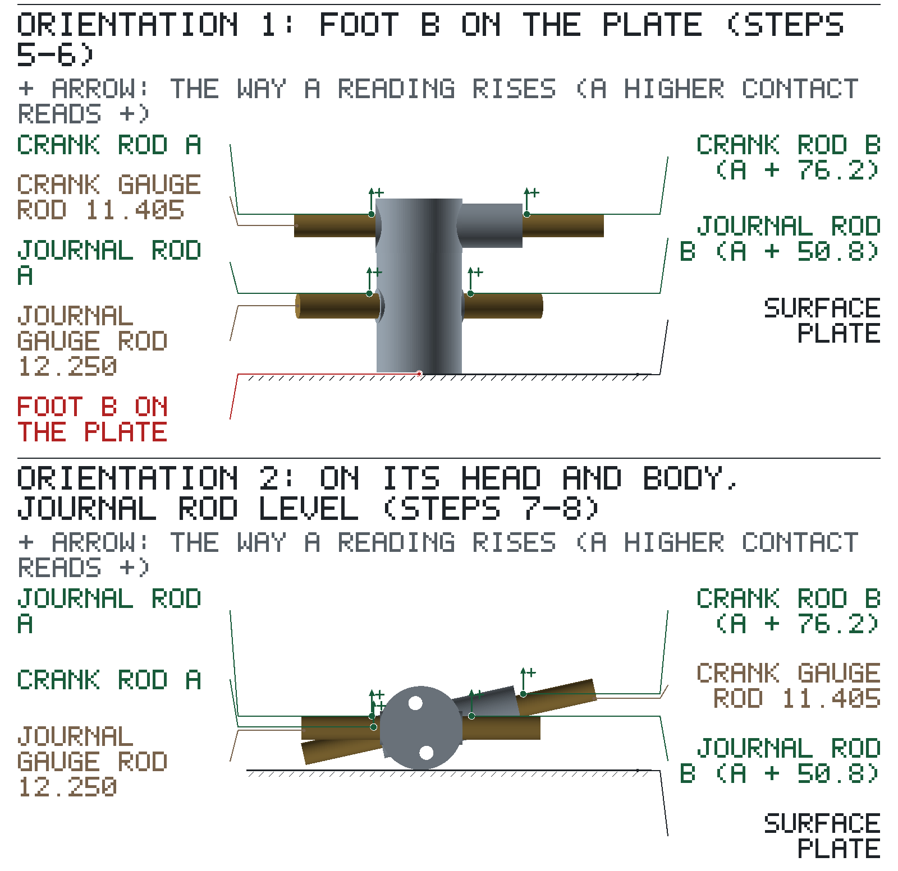
| step | reading | value |
|---|---|---|
| 7 | [rJ1] | |
| 8 | [rC1] | |
| 9 | [rJ2] | |
| 10 | [rC2] |
Calculate: 0.945 × rC1 − 1.384 × rJ1 = e1 ____________
Calculate: 0.901 × (rC2 − 16.918) − 1.418 × rJ2 = e2 ____________
Calculate: √(e1² + e2²) = result ____________; accept 0.10 or less.
paint and oil the finished post on the assembly bench, resting in the bonding cradle, to the built-up finish note on the job page.
Starts from: part as it arrives from Setup S11 — top at Z 50.660, bottom at Z -22.375. the finished post in the S7 cradle position, crank sleeve up.
2 in R8 boring head (job purchase): bought finished, accepted on receipt — PURCHASED TOOLING / RECEIPT CHECK table, Setup S6 sheet 1.
| SETUP S12 — sheet 1 (continued): assembly / finishing | ||||
|---|---|---|---|---|
| step | feature | material / consumable | action | inspection: limit, gauge |
| 10 | body | RAL 6005 moss-green alkyd enamel (in-house) | Finish note, built-up variant: paint RAL 6005 on the non-functional turned ODs; mask bores, faces and joint surfaces. Paint areas: the body OD from foot B to the shoulder, the head OD, and the crank-sleeve OD where it projects from the head. Mask the faces: foot B, the head top, the 0.37 mm shoulder step between body and head (tape edge on the shoulder corner), both cone caps and both crank-sleeve end faces. Mask the bores: plug the crank bore, the journal bore and both mount holes with their counterbores. Mask the joint surfaces: a 2 mm ring round the crank sleeve where it leaves the head, its bond line. SSPC-SP 3: power-tool clean the paint areas to bright, scuffed metal and blow off the dust. Brush RAL 6005 alkyd to 50-75 um dry film on the paint areas except the body band 10-20 mm from foot B that rests in the cradle saddle. When dry to handle, lift the post out by the masked head top, stand it on masked foot B on a clean sheet, brush the saddle band to the same film and leave it standing to cure as the can states. Check the dry film with the coating-thickness gauge at five places, one on the saddle band: each 50-75 um. | — |
| 20 | body | ISO VG 32 light machine oil (in-house) | After the paint cures, unmask and wipe a thin film of ISO VG 32 oil on every masked surface: foot B, the head top, the shoulder step, both cone caps, both crank-sleeve end faces and the sleeve's bond-line ring, into the crank and journal bores, and the mount holes and counterbores. | — |
Sign off: __________ First article / measured results: ____________________
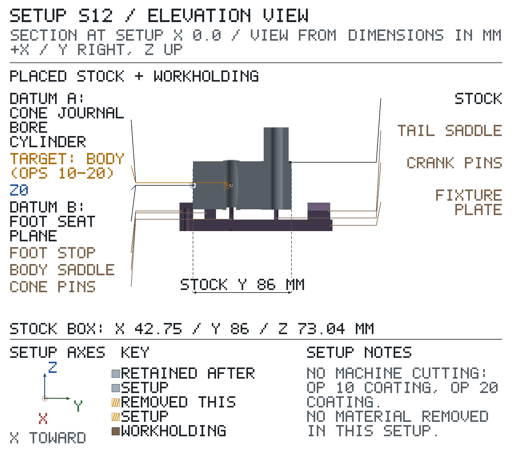